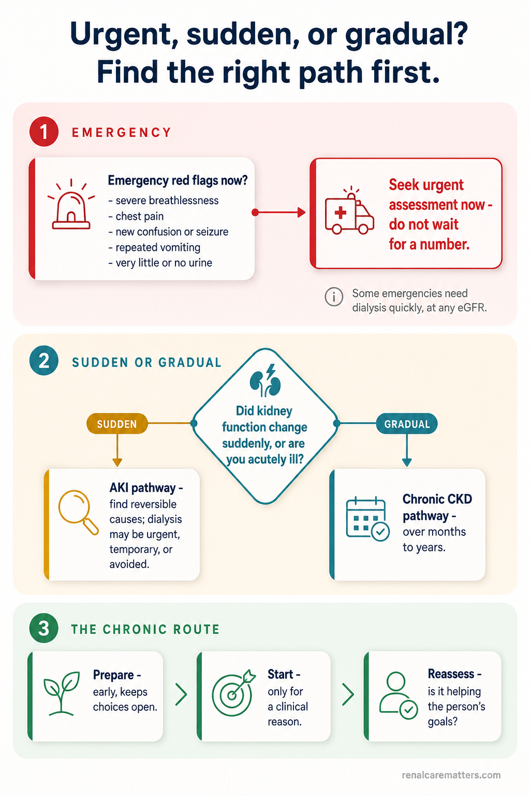
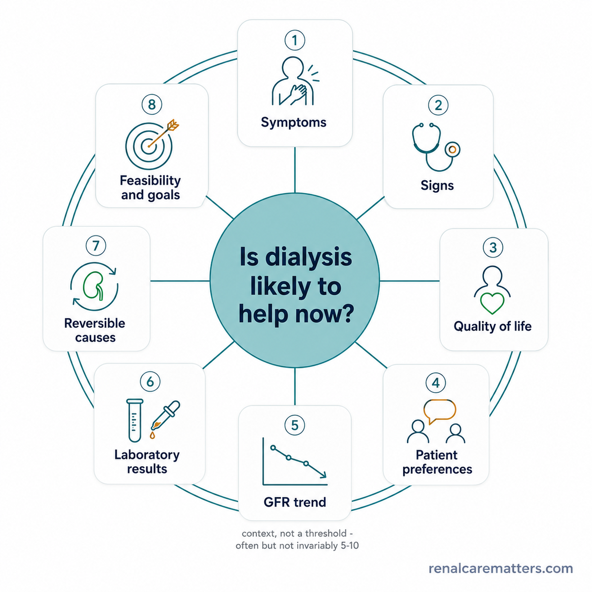
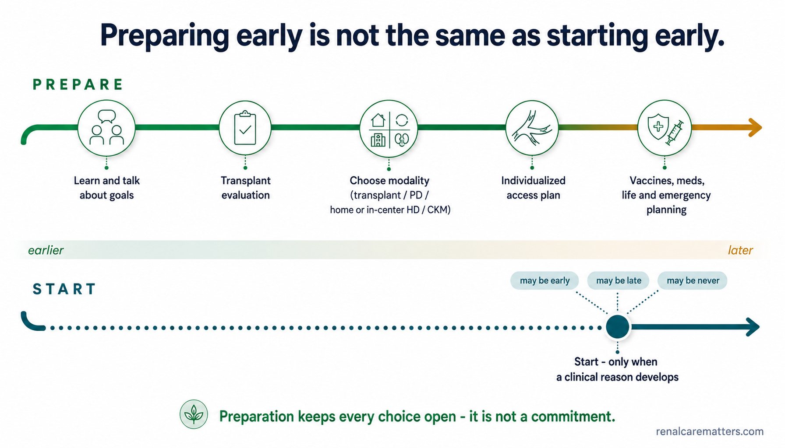
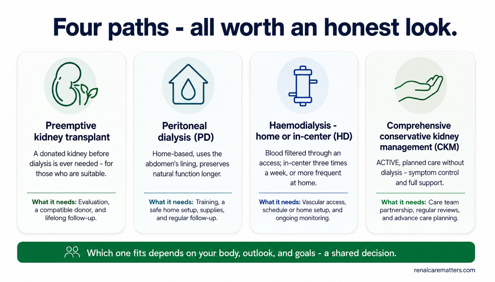
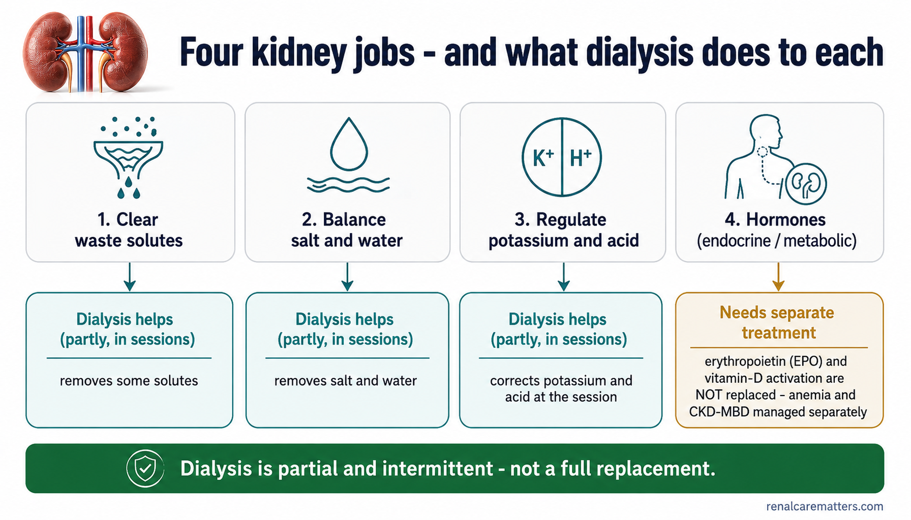
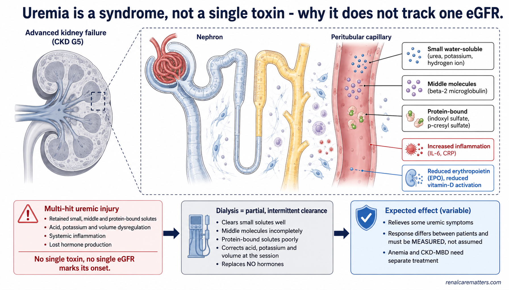
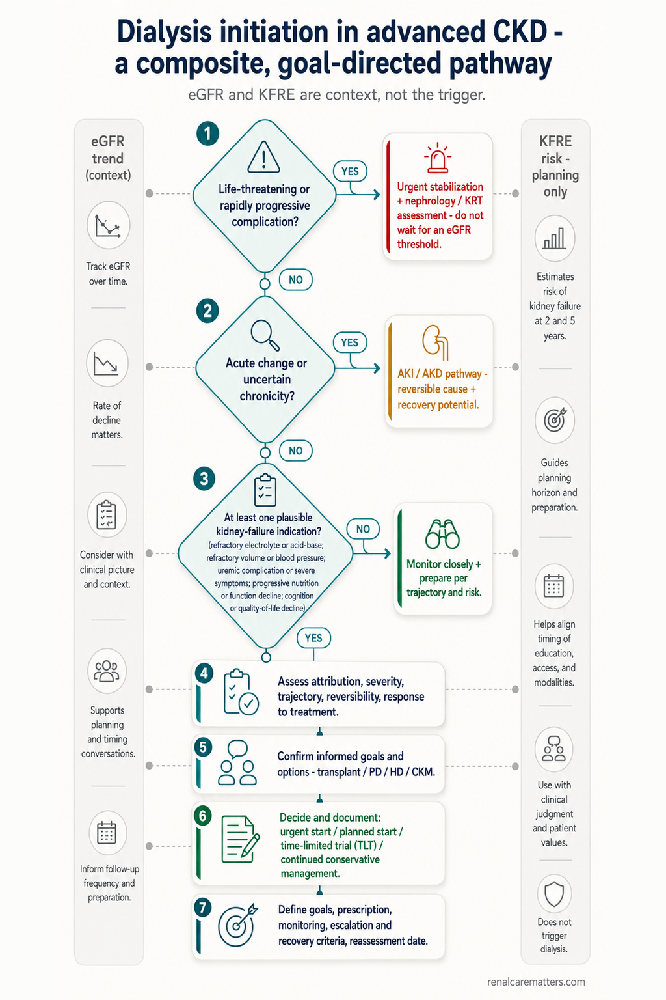

⛔ Get urgent medical help nowHumingi ng agarang tulong medikal ngayonPangayo dayon ug medikal nga tabangManyad kang agad a saup medical ngeni
Go to an emergency department or call for help for severe breathlessness or breathlessness at rest, chest pain, new confusion or extreme drowsiness, a seizure, severe weakness or a racing/irregular heartbeat, repeated vomiting with inability to keep fluids down, rapidly worsening swelling, or very little or no urine during an acute illness.Pumunta sa emergency department o tumawag ng tulong kung may matinding pangangapos ng hininga o hirap huminga kahit nakapahinga, pananakit ng dibdib, biglaang pagkalito o labis na pagkaantok, pagkombulsyon, matinding panghihina o mabilis/iregular na tibok ng puso, paulit-ulit na pagsusuka na hindi na makapag-inom, mabilis na lumalalang pamamaga, o napakakaunti o walang ihi habang may biglaang karamdaman.Adto sa emergency department o tawag ug tabang kung adunay grabe nga kalisod sa pagginhawa o kalisod moginhawa bisan nagpahulay, sakit sa dughan, bag-ong kalibog o sobra nga katulog, pangisi (seizure), grabe nga kaluya o paspas/dili regular nga pitik sa kasingkasing, balik-balik nga pagsuka nga dili makainom, paspas nga nagkagrabe nga panghubag, o gamay ra kaayo o wala nga ihi samtang naay kalit nga sakit.Ume ka king emergency department o mangaus kang saup nung atin masakit a pamikasakit ning pamanginawa o kasakit manginawa agiang mamainawa, sakit ning salu, bayung kalituan o sobrang katudturan, seizure, masakit a kaluyan o mabilis/aliwang pitik ning puso, paulit-ulit a pamagsuka a e na malyaring mag-inum, mabilis a lumalalang pamanlaki, o alang o mangaditak mu a ihi kayabe ning kalit a sakit.
These symptoms have many possible causes and need immediate assessment. Do not use this page to decide whether it is safe to wait for dialysis. A clinician must examine you, and some of these problems — a dangerously high potassium, severe acid buildup, or fluid flooding the lungs — can require dialysis quickly, whatever your eGFR (estimated glomerular filtration rate) happens to be.Ang mga sintomas na ito ay maraming posibleng sanhi at nangangailangan ng agarang pagsusuri. Huwag gamitin ang pahinang ito para magdesisyon kung ligtas bang maghintay para sa dialysis. Kailangan kang suriin ng isang clinician, at ang ilan sa mga problemang ito — mapanganib na mataas na potassium, matinding pagtaas ng asido, o tubig na bumabaha sa baga — ay maaaring mangailangan ng dialysis kaagad, anuman ang iyong eGFR (estimated glomerular filtration rate).Kini nga mga simtomas daghan ug posibleng hinungdan ug nanginahanglan ug diha-diha nga pagsusi. Ayaw gamita kini nga panid aron mohukom kon luwas ba nga maghulat alang sa dialysis. Kinahanglan ka susihon sa usa ka clinician, ug ang uban niini nga mga problema — peligroso nga taas nga potassium, grabe nga pagtaas sa asido, o tubig nga nag-awas sa baga — mahimong manginahanglan ug dialysis dayon, bisan unsa pa ang imong eGFR (estimated glomerular filtration rate).Deng sintomas a ini dakal lang malyaring pekasanhi at kailangan lang agad a pamanigaral. E me gagamitan ing panid a ini bang magdesisyon nung ligtas a manaya para king dialysis. Kailangan da kang siyasatan ning metung a clinician, at deng aliwa kareng problema a ini — makapanganib a matas a potassium, masakit a pamagtas ning asido, o danum a bumabalisbis king baga — malyaring kailangan da ing dialysis agad, nanuman ing kekang eGFR (estimated glomerular filtration rate).
In the Philippines, proceed to the nearest hospital emergency room; if your area has a local emergency hotline, use it. If you are already on dialysis, contact your unit as well.Sa Pilipinas, magtungo sa pinakamalapit na emergency room ng ospital; kung may lokal na emergency hotline ang inyong lugar, gamitin ito. Kung kayo ay nasa dialysis na, makipag-ugnayan din sa inyong unit.Sa Pilipinas, adto sa pinakaduol nga emergency room sa ospital; kung adunay lokal nga emergency hotline ang inyong dapit, gamita kini. Kung naa na ka sa dialysis, kontaka usab ang imong unit.King Pilipinas, ume ka king pekamalapit a emergency room ning ospital; nung atin lokal a emergency hotline king kekang lugal, gamitan me. Nung atyu ka nang dialysis, makiugne ka mu naman king kekang unit.
Plan early. Start for a reason. Keep reassessing.Magplano nang maaga. Magsimula dahil may dahilan. Patuloy na suriin muli.Magplano ug sayo. Magsugod tungod adunay rason. Padayon sa pagsusi pag-usab.Magplanu nang maranun. Magumpisa uling atin dahilan. Terus a siyasatan pasibayu.
Most people are told that dialysis "begins at eGFR 10," or 7, or 5. Those numbers are easy to remember and clinically incomplete. The honest answer is that the timing of dialysis is not one decision but three, and they are answered by different things: whether treatment is needed urgently now, what should be prepared before it is needed, and — when the time comes — which treatment best fits your body, your outlook, and your goals.Karamihan ng tao ay sinasabihan na ang dialysis ay "nagsisimula sa eGFR 10," o 7, o 5. Madaling tandaan ang mga numerong iyon ngunit hindi kumpleto sa klinikal na paraan. Ang tapat na sagot ay ang timing ng dialysis ay hindi iisang desisyon kundi tatlo, at sinasagot ang mga ito ng magkakaibang bagay: kung kailangan ba ang paggamot nang agaran ngayon, ano ang dapat ihanda bago ito kailanganin, at — pagdating ng panahon — kung aling paggamot ang pinakaangkop sa iyong katawan, sa iyong pananaw, at sa iyong mga layunin.Kadaghanan sa mga tawo giingnan nga ang dialysis "magsugod sa eGFR 10," o 7, o 5. Sayon hinumdoman kadto nga mga numero apan dili kompleto sa klinikal nga paagi. Ang matinud-anong tubag mao nga ang timing sa dialysis dili usa ka desisyon kondili tulo, ug gitubag kini sa lain-laing butang: kon gikinahanglan ba ang tambal nga diha-diha karon, unsa ang angay andamon una kini kinahanglanon, ug — inig-abot sa panahon — kon asa nga tambal ang labing haom sa imong lawas, sa imong panglantaw, ug sa imong mga tumong.Karakaldua dang tau sasabian dala na ing dialysis "mag-umpisa king eGFR 10," o 7, o 5. Malagua lang tandanan deng numeru a ita dapot ali kompletu king klinikal a paralan. Ing tune a pekibat pin ing timing ning dialysis ali ya metung a desisyon nune atlu, at sasagutan la reti kareng miyayaliwang bage: nung kailangan ya ing lunas a agad ngeni, nanu ing dapat ihanda bayu ya kailangan, at — nung dumating ing panaun — nung nu a lunas ing pekaangkup king kekang katawan, king kekang panlawe, ampo king kekang tudtud.
The single message worth carrying away is this: dialysis is started for a clinical reason — because kidney failure is causing a problem that cannot be controlled safely in another way — not because one eGFR, creatinine, or blood urea nitrogen (BUN) crossed a fixed number. Symptoms, safety, kidney function, and your life goals are reassessed continuously.Ang iisang mensaheng dapat dalhin ay ito: ang dialysis ay sinisimulan dahil sa isang klinikal na dahilan — dahil ang pagpalya ng bato ay nagdudulot ng problemang hindi na makontrol nang ligtas sa ibang paraan — hindi dahil isang eGFR, creatinine, o blood urea nitrogen (BUN) ang lumampas sa isang takdang numero. Ang mga sintomas, kaligtasan, gana ng bato, at iyong mga layunin sa buhay ay patuloy na sinusuri.Ang usa ka mensahe nga angay dad-on mao kini: ang dialysis ginasugdan tungod sa usa ka klinikal nga rason — tungod kay ang pagpalya sa kidney nagdala ug problema nga dili na makontrol nga luwas sa laing paagi — dili tungod kay usa ka eGFR, creatinine, o blood urea nitrogen (BUN) milapas sa usa ka pinirmi nga numero. Ang mga simtomas, kaluwasan, gana sa kidney, ug imong mga tumong sa kinabuhi padayon nga gisusi.Ing metung a mensahe a dapat daralan iti: ing dialysis uumpisan ya uling king metung a klinikal a dahilan — uling ing pamagkasira ning bato magdala yang problema a ali na makontrol nang ligtas king aliwang paraan — ali uling metung a eGFR, creatinine, o blood urea nitrogen (BUN) ing milampas king metung a takdang numeru. Deng sintomas, kaligtasan, gana ning bato, ampo deng kekang tudtud king bie terus lang sasaliksikan.
Prepare before you need itMaghanda bago mo ito kailanganinPangandam sa dili pa nimo kini kinahanglanonMaghanda bayu me kailangan
Education, a values conversation, and — where suitable — transplant evaluation, a modality choice, and an access plan should happen before a crisis, not during one.Ang edukasyon, isang usapan tungkol sa mga pinahahalagahan, at — kung angkop — pagsusuri para sa transplant, pagpili ng modality, at plano para sa access ay dapat mangyari bago ang isang krisis, hindi habang nasa gitna nito.Ang edukasyon, usa ka panag-istorya bahin sa mga bili, ug — kon haom — pagsusi alang sa transplant, pagpili ug modality, ug plano alang sa access angay mahitabo una sa krisis, dili samtang naa niini.Ing edukasyon, metung a pamiabe tungkul kareng pipahalagan, ampo — nung angkup — pamanigaral para king transplant, pamamili ning modality, ampo plano para king access dapat lang mangyari bayu ing krisis, ali kayabe na.
Start when there is a problem dialysis can helpMagsimula kapag may problemang matutulungan ng dialysisMagsugod kung adunay problema nga matabangan sa dialysisMagumpisa nung atin problema a asaupan ning dialysis
Refractory chemistry or fluid problems, uremic illness, or nutrition, function, or thinking that is declining because of kidney failure — weighed against your priorities.Mga problemang refractory sa kemistri o tubig, sakit na uremic, o nutrisyon, gana ng katawan, o pag-iisip na humihina dahil sa pagpalya ng bato — na tinitimbang laban sa iyong mga prayoridad.Mga problema nga refractory sa kemistri o tubig, sakit nga uremic, o nutrisyon, gana sa lawas, o panghunahuna nga naghinay tungod sa pagpalya sa kidney — nga gitimbang batok sa imong mga prayoridad.Deng problema a refractory king kemistri o danum, sakit a uremic, o nutrisyon, gana ning katawan, o pamanisip a lumuluko uling king pamagkasira ning bato — a titimbangan laban kareng kekang prayoridad.
Keep reassessingPatuloy na suriin muliPadayon sa pagsusi pag-usabTerus a siyasatan pasibayu
Once treatment begins, define what it is meant to improve and check whether it does — symptoms, labs, fluid, nutrition, goals, and any remaining natural kidney function.Kapag nagsimula na ang paggamot, tukuyin kung ano ang dapat nitong pagbutihin at tingnan kung nagagawa nga nito — mga sintomas, labs, tubig, nutrisyon, mga layunin, at anumang natitirang natural na gana ng bato.Kung magsugod na ang tambal, ilhon kon unsa ang angay niining paayohon ug susihon kon nabuhat ba niini — mga simtomas, labs, tubig, nutrisyon, mga tumong, ug bisan unsang nahibiling natural nga gana sa kidney.Nung mengumpisa na ing lunas, tukian nung nanu ing dapat na pasantingan at lawan nung agagawa na nga — deng sintomas, labs, danum, nutrisyon, tudtud, ampo nanumang mitagan a natural a gana ning bato.
Not decided by, on its ownHindi ito nag-iisang nagpapasyaDili kini nag-inusarang mohukomAli ini bukud-tanggal a magdesisyon
One eGFR value · one creatinine · one BUN · your age · your CKD (chronic kidney disease) stage · or the number of symptoms you can list. Each of these informs the picture. None of them, alone, decides.Isang eGFR value · isang creatinine · isang BUN · ang iyong edad · ang iyong CKD (chronic kidney disease) stage · o ang bilang ng mga sintomas na maililista mo. Bawat isa sa mga ito ay nagbibigay-alam sa larawan. Wala sa mga ito, mag-isa, ang nagpapasya.Usa ka eGFR value · usa ka creatinine · usa ka BUN · ang imong edad · ang imong CKD (chronic kidney disease) stage · o ang gidaghanon sa mga simtomas nga imong malista. Ang matag usa niini nagpahibalo sa hulagway. Walay usa niini, nga mag-inusara, ang mohukom.Metung a eGFR value · metung a creatinine · metung a BUN · ing kekang edad · ing kekang CKD (chronic kidney disease) stage · o ing bilang da reng sintomas a malista mu. Balang metung kareti magbie-balita king lawe. Alang metung kareti, bukud-tanggal, ing magdesisyon.
Is this a gradual change, or a sudden one?Ito ba ay unti-unting pagbabago, o biglaan?Kini ba usa ka hinay-hinay nga kausaban, o kalit?Ini wari metung a inut-inut a pamanyaliwa, o kalit?
Before anything else, the timing question splits in two, because the reasoning is completely different. Chronic kidney disease (CKD) develops slowly over months to years; acute kidney injury (AKI) is a rapid change over hours to days, often during another illness. The slow-CKD timing logic on this page does not apply to a sudden change — and an estimated GFR calculated from a single creatinine is not reliable when kidney function is moving quickly.Bago ang lahat, ang tanong tungkol sa timing ay nahahati sa dalawa, dahil ganap na magkaiba ang pangangatwiran. Ang chronic kidney disease (CKD) ay unti-unting umuunlad sa loob ng mga buwan hanggang taon; ang acute kidney injury (AKI) ay mabilis na pagbabago sa loob ng ilang oras hanggang araw, kadalasan habang may ibang sakit. Ang mabagal-na-CKD na lohika ng timing sa pahinang ito ay hindi angkop sa isang biglaang pagbabago — at ang isang estimated GFR na kinuwenta mula sa iisang creatinine ay hindi maaasahan kapag mabilis na gumagalaw ang gana ng bato.Sa wala pa ang tanan, ang pangutana bahin sa timing mabahin sa duha, tungod kay hingpit nga lahi ang pangatarungan. Ang chronic kidney disease (CKD) hinay-hinay nga mouswag sulod sa mga bulan hangtod tuig; ang acute kidney injury (AKI) usa ka paspas nga kausaban sulod sa pipila ka oras hangtod adlaw, kasagaran samtang naay laing sakit. Ang hinay-nga-CKD nga lohika sa timing niini nga panid dili haom sa kalit nga kausaban — ug ang usa ka estimated GFR nga gikwenta gikan sa usa ka creatinine dili kasaligan kung paspas nga naglihok ang gana sa kidney.Bayu ing anaman, ing kutang tungkul king timing mibabahagi ya king adua, uling ganap a miyayaliwa ing pangatuiran. Ing chronic kidney disease (CKD) inut-inut yang tutubu king kilub da reng bulan angga king banua; ing acute kidney injury (AKI) metung a mabilis a pamanyaliwa king kilub da reng oras angga king aldo, karaniwan kayabe ning aliwang sakit. Ing mabagal-a-CKD a lohika ning timing king panid a ini ali ya angkup king metung a kalit a pamanyaliwa — at ing metung a estimated GFR a kinuwenta ibat king metung a creatinine ali ya maasahan nung mabilis a gagalo ing gana ning bato.
🐢 Gradual — over months or yearsUnti-unti — sa loob ng mga buwan o taonHinay-hinay — sulod sa mga bulan o tuigInut-inut — king kilub da reng bulan o banua
Your kidney function has declined slowly and you have known CKD. This is the planning pathway: prepare early, watch for the problems below, and decide with your team.Ang gana ng iyong bato ay unti-unting humina at may kilalang CKD ka. Ito ang landas ng pagpaplano: maghanda nang maaga, bantayan ang mga problema sa ibaba, at magdesisyon kasama ang iyong team.Ang gana sa imong kidney hinay-hinay nga mihuyang ug adunay nailhan ka nga CKD. Kini ang dalan sa pagplano: pangandam ug sayo, bantayi ang mga problema sa ubos, ug mohukom uban sa imong team.Ing gana ning kekang bato inut-inut yang linuko at atin kang kilalang CKD. Ini ing dalan ning pamagplanu: maghanda kang maranun, bantayan mu deng problema king lalam, at magdesisyon ka kayabe ning kekang team.
Continue on this page — the whole guide is written for you.Magpatuloy sa pahinang ito — ang buong gabay ay isinulat para sa iyo.Padayon sa niini nga panid — ang tibuok giya gisulat alang kanimo.Terus ka king panid a ini — ing mabilug a giya sinulat ya para keka.
⚡ Sudden — over hours or daysBiglaan — sa loob ng ilang oras o arawKalit — sulod sa pipila ka oras o adlawKalit — king kilub da reng oras o aldo
Your kidney function or urine output changed abruptly, or you are acutely ill (infection, dehydration, a new medication, a blockage). This may be AKI, which is assessed and treated differently — dialysis can be urgent, temporary, or avoidable.Ang gana ng iyong bato o ang dami ng ihi ay biglang nagbago, o ikaw ay biglaang nagkasakit (impeksyon, dehydration, bagong gamot, isang barado). Maaaring AKI ito, na sinusuri at ginagamot nang iba — ang dialysis ay maaaring agaran, pansamantala, o maiiwasan.Ang gana sa imong kidney o ang gidaghanon sa ihi kalit nga nausab, o ikaw kalit nga nagsakit (impeksyon, dehydration, bag-ong tambal, usa ka barado). Mahimong AKI kini, nga gisusi ug gitambalan nga lahi — ang dialysis mahimong dinalian, temporaryo, o malikayan.Ing gana ning kekang bato o ing dakal ning ihi kalit yang mengayaliwa, o kalit kang mengasakit (impeksyon, dehydration, bayung gamot, metung a barado). Malyaring AKI ini, a sisiyasatan at lulunasan nang aliwa — ing dialysis malyaring agad, pansamantala, o maiwasan.
Not sure which one you are? That itself is a reason to be seen promptly rather than to guess. You are not expected to interpret creatinine trends yourself — that is your clinician's job.Hindi sigurado kung alin ka sa dalawa? Iyon mismo ay dahilan para agad kang masuri sa halip na manghula. Hindi inaasahang ikaw mismo ang magpapakahulugan sa mga takbo ng creatinine — trabaho iyon ng iyong clinician.Dili sigurado kon asa ka sa duha? Kana mismo usa ka rason aron dali kang masusi imbes nga magpangagpas. Wala gilauman nga ikaw mismo ang mohubad sa mga takbo sa creatinine — trabaho kana sa imong clinician.Ali ka siguradu nung nu ka karin king adua? Ita mismu ing dahilan bang agad kang masiyasat imbes a manghula. Ali da asahan a ika mismu ing magpakahulugan kareng takbo ning creatinine — obra na yan ning kekang clinician.

A safety-first map: emergencies are handled first, a sudden change is separated from a gradual one, and only the gradual (chronic) route follows the prepare → start-for-a-reason → reassess logic.
- AKI
- Acute kidney injury — a rapid change over hours to days, assessed on a separate pathway.
- CKD
- Chronic kidney disease — slow decline over months to years.
There is no magic eGFR.Walang mahiwagang eGFR.Walay salamangka nga eGFR.Alang salamangkang eGFR.
The estimated glomerular filtration rate (eGFR) is a genuinely useful number: it tells you roughly how advanced kidney disease is and how fast it is moving. What it cannot do is announce the day dialysis must begin. At very low kidney function, the creatinine-based eGFR becomes less precise — it is thrown off by low muscle mass, frailty, an amputation, swelling, an unusual diet, or kidney function that is itself changing. And two people with an identical eGFR can be worlds apart in their potassium, their acid balance, their fluid, their nutrition, how much urine they still make, and whether they feel well enough to live safely.Ang estimated glomerular filtration rate (eGFR) ay isang tunay na kapaki-pakinabang na numero: tinatantya nito kung gaano na kalala ang sakit sa bato at gaano ito kabilis kumikilos. Ang hindi nito magagawa ay ipahayag ang araw na dapat magsimula ang dialysis. Sa napakababang gana ng bato, ang creatinine-based na eGFR ay nagiging mas hindi tiyak — naaapektuhan ito ng mababang laman ng kalamnan, pagiging mahina, isang amputation, pamamaga, isang di-pangkaraniwang diyeta, o gana ng bato na mismong nagbabago. At dalawang taong may magkaparehong eGFR ay maaaring magkalayong-magkalayo sa kanilang potassium, sa balanse ng asido, sa tubig, sa nutrisyon, kung gaano karaming ihi ang nagagawa pa nila, at kung sapat ba ang pakiramdam nilang mabuti para mabuhay nang ligtas.Ang estimated glomerular filtration rate (eGFR) usa ka tinuod nga mapuslanon nga numero: gibanabana niini kon unsa na ka grabe ang sakit sa kidney ug unsa kini ka paspas molihok. Ang dili niini mahimo mao ang pagpahayag sa adlaw nga angay magsugod ang dialysis. Sa hilabihan ka ubos nga gana sa kidney, ang creatinine-based nga eGFR mahimong dili na kaayo tukma — naapektohan kini sa ubos nga sulod sa kaunuran, kaluya, usa ka amputation, panghubag, usa ka dili kasagaran nga diyeta, o gana sa kidney nga nag-usab mismo. Ug duha ka tawo nga adunay parehong eGFR mahimong layo kaayo sa ilang potassium, sa ilang balanse sa asido, sa ilang tubig, sa ilang nutrisyon, kon pila ka ihi ang mabuhat pa nila, ug kon igo ba ang ilang pagbati nga maayo aron mabuhi nga luwas.Ing estimated glomerular filtration rate (eGFR) metung yang tune a makakayanan a numeru: titimbangan na nung makananu na kalala ing sakit king bato at makananu ya kabilis a gagalo. Ing e na agagawa ing ipahayag ing aldo a dapat magumpisa ing dialysis. King mababa a gana ning bato, ing creatinine-based a eGFR mengari yang e na masyadong tiyak — aapektuan ne ning mababang laman ning kalamnan, kaluyan, metung a amputation, panlaki, metung a e karaniwan a diyeta, o gana ning bato a mismung mengayaliwa. At adua tau a atin parehong eGFR malyaring marayung-marayu king karelang potassium, king balanse ning asido, king danum, king nutrisyon, nung makananu karakal a ihi ing agagawa da pa, at nung sukat ing pamiramdam dang mayap para mabie a ligtas.
So the useful question is never "what is the number?" but "what is the number a sign of, and can that problem be controlled another way?" KDIGO — the international kidney-guideline body — puts it as a composite assessment: symptoms, signs, quality of life, your preferences, GFR, and laboratory abnormalities, weighed together. In its 2024 CKD guideline, KDIGO notes that the indications to start dialysis often — but not invariably — develop at a GFR of about 5–10 mL/min/1.73 m². That range is descriptive, not a threshold: it is where indications commonly appear, not a target to aim for and not an instruction to wait.Kaya ang kapaki-pakinabang na tanong ay hindi kailanman "ano ang numero?" kundi "ano ang tanda ng numerong iyon, at makokontrol ba ang problemang iyon sa ibang paraan?" Inilalahad ito ng KDIGO — ang pandaigdigang lupon ng mga gabay sa bato — bilang isang composite assessment: mga sintomas, palatandaan, kalidad ng buhay, iyong mga kagustuhan, GFR, at mga abnormalidad sa laboratoryo, na tinitimbang nang magkakasama. Sa 2024 CKD guideline nito, binabanggit ng KDIGO na ang mga indikasyon para magsimula ng dialysis ay madalas — ngunit hindi palagi — nabubuo sa GFR na mga 5–10 mL/min/1.73 m². Ang saklaw na iyon ay naglalarawan lamang, hindi isang threshold: doon karaniwang lumilitaw ang mga indikasyon, hindi isang target na tutumbukin at hindi isang utos na maghintay.Busa ang mapuslanon nga pangutana dili gyud "unsa ang numero?" kondili "unsa ang timailhan sa numero, ug makontrol ba kadto nga problema sa laing paagi?" Gibutang kini sa KDIGO — ang internasyonal nga lawas sa mga giya sa kidney — isip usa ka composite assessment: mga simtomas, timailhan, kalidad sa kinabuhi, imong mga gusto, GFR, ug mga abnormalidad sa laboratoryo, nga gitimbang nga dungan. Sa 2024 CKD guideline niini, gihisgotan sa KDIGO nga ang mga indikasyon aron magsugod ug dialysis kasagaran — apan dili kanunay — motungha sa GFR nga mga 5–10 mL/min/1.73 m². Kadto nga han-ay naghulagway lamang, dili usa ka threshold: didto kasagaran motungha ang mga indikasyon, dili usa ka target nga pangitngiton ug dili usa ka mando nga maghulat.Kanita ing makakayanan a kutang ali kapilan man "nanu ing numeru?" nune "nanu ing tanda ning numeru, at makontrol wari ita a problema king aliwang paraan?" Ilalage ne ning KDIGO — ing pang-yatu a lupon da reng giya king bato — antimong metung a composite assessment: deng sintomas, tanda, kalidad ning bie, deng kekang buri, GFR, ampo deng abnormalidad king laboratoryo, a titimbangan a mirasan. King 2024 CKD guideline na, sasabian ning KDIGO a deng indikasyon bang magumpisa ning dialysis malmu — dapot ali pariwan — tutubu la king GFR a mga 5–10 mL/min/1.73 m². Ita a saklaw maglarawan mu, ali metung a threshold: karin karaniwan a lulual deng indikasyon, ali metung a target a tutudian at ali metung a utos a manaya.
| Number-only thinkingPag-iisip na numero lamangPanghunahuna nga numero langPamanisip a numeru mu | Composite, clinical thinkingComposite, klinikal na pag-iisipComposite, klinikal nga panghunahunaComposite, klinikal a pamanisip |
|---|---|
| "eGFR is 8, so dialysis must begin.""eGFR ay 8, kaya dapat na magsimula ang dialysis.""eGFR kay 8, busa kinahanglan magsugod na ang dialysis.""eGFR ya 8, kanita dapat na magumpisa ing dialysis." | What problems are present, are they caused by the kidneys, can they be controlled safely, and what does the person actually want?Anong mga problema ang naroroon, sanhi ba ng mga bato ang mga ito, makokontrol ba nang ligtas, at ano nga ba talaga ang gusto ng tao?Unsa nga mga problema ang naa, tungod ba sa kidney kini, makontrol ba nga luwas, ug unsa gyud ang gusto sa tawo?Nanung problema ing atyu, uling da wari reng bato deti, makontrol la wari a ligtas, at nanu pin ing tune a buri ning tau? |
| "eGFR is 6, so it is safe to wait.""eGFR ay 6, kaya ligtas na maghintay.""eGFR kay 6, busa luwas na maghulat.""eGFR ya 6, kanita ligtas na manaya." | A very low eGFR calls for close monitoring; a dangerous problem can develop at any point, so a plan and quick access to care matter more than a fixed waiting line.Ang napakababang eGFR ay nangangailangan ng malapitang pagbabantay; maaaring umusbong ang mapanganib na problema anumang oras, kaya mas mahalaga ang isang plano at mabilis na daan sa pangangalaga kaysa sa isang takdang hangganan ng paghihintay.Ang hilabihan ka ubos nga eGFR nanginahanglan ug suod nga pagbantay; ang delikado nga problema mahimong motungha bisan kanus-a, busa mas importante ang usa ka plano ug paspas nga agianan sa pag-atiman kaysa sa usa ka pinirmi nga linya sa paghulat.Ing mababa a eGFR kailangan na ning malapit a pamamante; malyaring lumual ing makapanganib a problema nanumang oras, kanita mas mahalaga ing metung a plano ampo mabilis a dalan king pamamalus kesa king metung a takdang angganan ning pamanaya. |
| "Creatinine fell after dialysis, so the person is better.""Bumaba ang creatinine pagkatapos ng dialysis, kaya gumaling na ang tao.""Miubos ang creatinine human sa dialysis, busa maayo na ang tawo.""Linuko ing creatinine kaibat ning dialysis, kanita mengayap ne ing tau." | Did breathing, appetite, thinking, energy, chemical safety, and the goals that matter to this person actually improve?Bumuti nga ba ang paghinga, gana sa pagkain, pag-iisip, lakas, kaligtasan sa kemikal, at ang mga layuning mahalaga sa taong ito?Miuswag ba gyud ang pagginhawa, gana sa pagkaon, panghunahuna, kusog, kaluwasan sa kemikal, ug ang mga tumong nga importante niini nga tawo?Mengayap wari ing pamanginawa, gana king pamangan, pamanisip, sikanan, kaligtasan king kemikal, ampo deng tudtud a mahalaga king tau a ini? |
Why creatinine is not the villainBakit hindi ang creatinine ang kontrabidaNgano nga dili ang creatinine ang kontrabidaBakit ali ing creatinine ing kontrabida
Creatinine is mostly a marker of filtration, not a poison dialysis is there to remove. "Uremia" — the illness of kidney failure — comes from many retained substances, inflammation, and hormone and metabolic changes together. That is exactly why no single measured toxin, and no single eGFR, reliably predicts when a person will start to feel unwell. How kidney function is actually measured →Ang creatinine ay pangunahing isang marker ng pagsasala, hindi isang lason na inaalis ng dialysis. Ang "uremia" — ang sakit ng pagpalya ng bato — ay nagmumula sa maraming natitirang sangkap, pamamaga, at mga pagbabago sa hormone at metabolismo nang sama-sama. Iyon mismo ang dahilan kung bakit walang iisang sinusukat na toxin, at walang iisang eGFR, ang maaasahang makakahula kung kailan magsisimulang makaramdam ng masama ang isang tao. Paano talaga sinusukat ang gana ng bato →Ang creatinine kasagaran usa lang ka marker sa pagsala, dili usa ka hilo nga kuhaon sa dialysis. Ang "uremia" — ang sakit sa pagpalya sa kidney — gikan sa daghang nahibiling substansiya, panghubag, ug mga kausaban sa hormone ug metabolismo nga dungan. Kana gyud ang rason ngano nga walay usa ka sinukod nga toxin, ug walay usa ka eGFR, ang kasaligan nga makatagna kon kanus-a magsugod nga mobati ug dili maayo ang usa ka tawo. Unsaon gyud pagsukod ang gana sa kidney →Ing creatinine karaniwan metung yang marker ning pamanyala, ali metung a lason a aalisan ning dialysis. Ing "uremia" — ing sakit ning pamagkasira ning bato — ibat ya kareng dakal a mitagan a sangkap, panlaki, ampo deng pamanyaliwa king hormone ampo metabolismo a mirasan. Ita mismu ing dahilan bakit alang metung a sisiyasatan a toxin, at alang metung a eGFR, ing maasahang makapaghula nung kapilan mag-umpisang miramdam a marok ing metung a tau. Makananu pin sisiyasatan ing gana ning bato →

The decision to start dialysis is a composite one. Eight inputs sit at equal weight around one central question — "Is dialysis likely to help now?" — so that no single number, including the GFR trend, decides on its own.
- GFR
- Glomerular filtration rate — the kidney's filtering rate; here it is one input among many, shown as a trend, not a threshold.
Dialysis readiness mapMapa ng kahandaan sa dialysisMapa sa pagkaandam sa dialysisMapa ning kahandaan king dialysis
This tool organizes a conversation with your kidney team. It does not diagnose you, score you, tell you that you do or do not need dialysis, predict a start date, or say it is safe to wait. Every answer is optional, nothing you enter is saved or sent anywhere, and any urgent symptom always comes first. When you finish, bring the result to your team.Inaayos ng tool na ito ang isang usapan kasama ang iyong kidney team. Ito ay hindi nagbibigay ng diagnosis, hindi nagbibigay ng iskor, hindi nagsasabing kailangan o hindi mo kailangan ng dialysis, hindi humuhula ng petsa ng pagsisimula, o nagsasabing ligtas maghintay. Bawat sagot ay opsyonal, walang inililagay mong itinatago o ipinapadala kahit saan, at ang anumang agarang sintomas ang laging nauuna. Kapag natapos ka na, dalhin ang resulta sa iyong team.Kini nga tool naghan-ay sa usa ka panag-istorya uban sa imong kidney team. Kini dili naghatag ug diagnosis, dili naghatag ug iskor, dili nag-ingon nga kinahanglan o dili nimo kinahanglan ang dialysis, dili nagtagna ug petsa sa pagsugod, o nag-ingon nga luwas maghulat. Ang matag tubag opsyonal, walay imong gibutang nga gitipigan o gipadala bisan asa, ug ang bisan unsa nga dinalian nga simtoma kanunay nga mag-una. Kung mahuman ka na, dad-a ang resulta sa imong team.Ing tool a ini aayusan na ing metung a pamiabe kayabe ning kekang kidney team. Ini ali mibie diagnosis, ali mibie iskor, ali sasabing kailangan o e mu kailangan ing dialysis, ali maghula ning petsa ning pamagumpisa, o sasabing ligtas manaya. Balang pekibat opsyonal, alang ilalage mung isasalikut o ipapadala nokarin man, at ing nanumang agad a sintomas ing pilan mumuna. Nung matapus na ka, daralan me ing resulta king kekang team.
What problems make dialysis necessary?Anong mga problema ang nagpapakailangan ng dialysis?Unsa nga mga problema ang naghimo sa dialysis nga kinahanglanon?Nanung problema ing magpakailangan king dialysis?
When dialysis is started in slowly progressive kidney disease, it is because of one or more of the situations below — not because of a number by itself. For each, your team weighs the same things: how severe it is and which way it is heading, whether something else could be causing it, what has already been tried, how likely dialysis is to help, what the treatment would cost you in daily life, and how urgent it is.Kapag sinisimulan ang dialysis sa unti-unting lumalalang sakit sa bato, ito ay dahil sa isa o higit pa sa mga sitwasyon sa ibaba — hindi dahil sa isang numero lamang. Para sa bawat isa, tinitimbang ng iyong team ang parehong mga bagay: kung gaano ito kalala at saan ito papunta, kung may ibang maaaring dahilan nito, ano na ang nasubukan, gaano kalaki ang tsansang makakatulong ang dialysis, magkano ang mahahalagang mawawala sa iyo sa araw-araw na buhay dahil sa paggamot, at gaano ito kaagaran.Kung ginasugdan ang dialysis sa hinay-hinay nga nagkagrabe nga sakit sa kidney, kini tungod sa usa o kapin pa sa mga kahimtang sa ubos — dili tungod sa usa ka numero lamang. Alang sa matag usa, gitimbang sa imong team ang parehong mga butang: kon unsa kini ka grabe ug asa kini padulong, kon adunay lain nga posibleng hinungdan niini, unsa na ang nasulayan, unsa ka lagmit nga makatabang ang dialysis, unsa ang mawala kanimo sa adlaw-adlaw nga kinabuhi tungod sa tambal, ug unsa kini ka dinalian.Nung uumpisan ing dialysis king inut-inut a lumalalang sakit king bato, ini uling king metung o mas dakal kareng sitwasyon king lalam — ali uling king metung a numeru mu. Para king balang metung, titimbangan ning kekang team deng parehong bage: nung makananu ya kalala at nokarin ya papunta, nung atin aliwa a malyaring dahilan na, nanu na ing sinubukan, makananu karagul ing tsansang makasaup ing dialysis, magkanu ing mawawala keka king aldo-aldo a bie uling king lunas, at makananu ya kaagad.
Dangerous chemistry that cannot be controlled safelyMapanganib na kemistri na hindi makokontrol nang ligtasDelikado nga kemistri nga dili makontrol nga luwasMakapanganib a kemistri a ali makontrol nang ligtas
Fluid or blood-pressure problems that cannot be controlledMga problema sa tubig o presyon ng dugo na hindi makokontrolMga problema sa tubig o presyon sa dugo nga dili makontrolDeng problema king danum o presyon ning daya a ali makontrol
Uremic complications and severe symptomsMga komplikasyong uremic at malulubhang sintomasMga komplikasyong uremic ug grabe nga mga simtomasDeng komplikasyong uremic ampo masakit a sintomas
Nutrition or physical function declining despite good careNutrisyon o pisikal na gana na humihina sa kabila ng mabuting pangangalagaNutrisyon o pisikal nga gana nga naghinay bisan pa sa maayong pag-atimanNutrisyon o pisikal a gana a lumuluko agiang mayap ing pamamalus
Thinking or quality of life deteriorating from kidney failurePag-iisip o kalidad ng buhay na lumulubha dahil sa pagpalya ng batoPanghunahuna o kalidad sa kinabuhi nga nagkagrabe tungod sa pagpalya sa kidneyPamanisip o kalidad ning bie a lumalalang uling king pamagkasira ning bato
What "refractory" meansAng ibig sabihin ng "refractory"Ang buot ipasabot sa "refractory"Ing buri sabian ning "refractory"
Throughout this page, a problem is called refractory when it stays dangerous or intolerable despite appropriate medical treatment, or when that treatment cannot be delivered safely enough. It does not mean every possible therapy must be exhausted first — a life-threatening complication is treated urgently, not endlessly optimized.Sa buong pahinang ito, tinatawag na refractory ang isang problema kapag nanatili itong mapanganib o hindi matiis sa kabila ng angkop na medikal na paggamot, o kapag ang paggamot na iyon ay hindi maibibigay nang sapat na ligtas. Hindi nito ibig sabihin na dapat maubos muna ang bawat posibleng therapy — ang isang nakamamatay na komplikasyon ay ginagamot nang agaran, hindi walang-katapusang inaayos.Sa tibuok niini nga panid, gitawag nga refractory ang usa ka problema kung magpabilin kining delikado o dili maantos bisan pa sa angay nga medikal nga tambal, o kung dili kadto nga tambal mahatag nga igong luwas. Kini dili nagpasabot nga kinahanglan una nga mahurot ang matag posibleng therapy — ang usa ka makamatay nga komplikasyon gitambalan nga dinalian, dili walay kataposang gi-optimize.King mabilug a panid a ini, aausan yang refractory ing metung a problema nung manatili yang makapanganib o e maratunan agiang atin angkup a medikal a lunas, o nung ita a lunas ali maibie nang sukat a ligtas. Ali na buring sabian a dapat maubus mumuna ing balang malyaring therapy — ing metung a makamate a komplikasyon lulunasan yang agad, ali walang-anggang aayusan.
Could something else be contributing?May iba pa kayang nag-aambag?Aduna pa kaha'y lain nga nakatampo?Atin pa waring aliwa a magdagdag?
Fatigue, poor appetite, nausea, itch, restless legs, poor sleep, and slowed thinking are all common in advanced kidney disease — but they are not unique to it. The same symptoms can come from anemia, an infection, heart failure, a medication, depression, a thyroid problem, cancer, poor nutrition, or a sleep disorder. Many of these are reversible, and treating them can improve how you feel without dialysis — or make the eventual dialysis decision clearer.Ang pagkapagod, mahinang gana sa pagkain, pagduduwal, pangangati, hindi mapakaling mga binti, mahinang tulog, at pabagal na pag-iisip ay lahat karaniwan sa malalang sakit sa bato — ngunit hindi lamang ito nagmumula rito. Ang parehong mga sintomas ay maaaring magmula sa anemia, isang impeksyon, pagpalya ng puso, isang gamot, depresyon, problema sa thyroid, kanser, mahinang nutrisyon, o isang sleep disorder. Marami sa mga ito ay nababaligtad, at ang paggamot sa mga ito ay maaaring magpabuti sa iyong pakiramdam nang walang dialysis — o magpalinaw sa magiging desisyon tungkol sa dialysis.Ang kakapoy, huyang nga gana sa pagkaon, kaluod, katol, dili mapahulay nga mga bitiis, huyang nga katulog, ug nahinay nga panghunahuna kasagaran sa abanteng sakit sa kidney — apan dili lamang kini gikan niini. Ang parehong mga simtomas mahimong gikan sa anemia, usa ka impeksyon, pagpalya sa kasingkasing, usa ka tambal, depresyon, problema sa thyroid, kanser, huyang nga nutrisyon, o usa ka sleep disorder. Daghan niini mabalik, ug ang pagtambal niini makapauswag sa imong pagbati nga walay dialysis — o makapatin-aw sa umaabot nga desisyon bahin sa dialysis.Ing pangayap, maluyang gana king pamangan, pamagsuka, kati, e mapainawang bitis, maluyang tudtud, ampo mabagal a pamanisip lahat karaniwan king malalang sakit king bato — dapot ali mu ini ibat karin. Ing parehong sintomas malyaring ibat king anemia, metung a impeksyon, pamagkasira ning puso, metung a gamot, depresyon, problema king thyroid, kanser, maluyang nutrisyon, o metung a sleep disorder. Dakal kareti ing mababalik, at ing pamaglunas kareti malyaring pasantingan ing kekang pamiramdam a alang dialysis — o pasanawan ing maging desisyon tungkul king dialysis.
So the sound logic your team follows has three steps: first, name and measure the symptom; second, look for a competing or reversible cause and treat it where it is safe to do so; and only then decide whether what remains is plausibly kidney-related and likely to improve enough with dialysis to be worth its burdens. "Symptoms" is not a vague permission slip — the assessment work should be visible. This checking never delays treatment of a genuinely life-threatening complication; the two run in parallel.Kaya ang matinong lohikang sinusunod ng iyong team ay may tatlong hakbang: una, pangalanan at sukatin ang sintomas; pangalawa, hanapin ang isang nakikipagkumpitensyang o nababaligtad na sanhi at gamutin ito kung ligtas gawin; at saka pa lamang magdesisyon kung ang natitira ay posibleng may kaugnayan sa bato at malamang na gaganda nang sapat sa dialysis para tumbasan ang mga pasanin nito. Ang "mga sintomas" ay hindi isang malabong pahintulot — dapat nakikita ang gawaing pagsusuri. Ang pagsusuring ito ay hindi kailanman nagpapaantala sa paggamot ng isang tunay na nakamamatay na komplikasyon; sabay silang isinasagawa.Busa ang maayong lohika nga gisunod sa imong team adunay tulo ka lakang: una, nganli ug sukda ang simtoma; ikaduha, pangitaa ang usa ka nakigkompetensya o mabalik nga hinungdan ug tambali kini kung luwas buhaton; ug niana pa lamang mohukom kon ang nahibilin lagmit ba kalabot sa kidney ug lagmit ba nga moayo nga igo sa dialysis aron takos sa mga palas-anon niini. Ang "mga simtomas" dili usa ka hanap nga permiso — angay makita ang buluhaton sa pagsusi. Kini nga pagsusi wala gyud makalangan sa pagtambal sa usa ka tinuod nga makamatay nga komplikasyon; ang duha dungan nga gibuhat.Kanita ing masinup a lohikang tuturan ning kekang team atin yang atlung dapat: mumuna, panlaganan at sukatan ing sintomas; kaduwa, panintunan ing metung a mikikumpitensyang o mababalik a dahilan at lunasan me nung ligtas a gawan; at saka mu magdesisyon nung ing mitagan malyaring atin kaugnayan king bato at malyaring gumaling nang sukat king dialysis bang tumbasan deng bayat na. Ing "sintomas" ali metung a malabong pahintulot — dapat akakit ing obrang pamanigaral. Ing pamanigaral a ini ali kapilan man magpaantala king lunas ning metung a tune a makamate a komplikasyon; sabay lang gagawan detang adua.
Common reversible contributors worth asking about: anemia or low iron · infection · heart or liver problems · thyroid disorder · depression or a sleep disorder · a medication or supplement building up · constipation · simply not eating enough. Anemia in CKD → · Mood & sleep in CKD →Mga karaniwang nababaligtad na nag-aambag na dapat itanong: anemia o mababang iron · impeksyon · problema sa puso o atay · thyroid disorder · depresyon o sleep disorder · gamot o supplement na nag-iipon · paninigas ng dumi · hindi lamang sapat ang pagkain. Anemia sa CKD → · Kalooban at tulog sa CKD →Mga kasagarang mabalik nga nakatampo nga angay pangutan-on: anemia o ubos nga iron · impeksyon · problema sa kasingkasing o atay · thyroid disorder · depresyon o sleep disorder · tambal o supplement nga nagtapok · pagsagol sa tae (constipation) · dili lang igo ang pagkaon. Anemia sa CKD → · Kahimtang sa buot ug katulog sa CKD →Deng karaniwang mababalik a magdagdag a dapat kutnan: anemia o mababang iron · impeksyon · problema king puso o ate · thyroid disorder · depresyon o sleep disorder · gamot o supplement a titipun · pamanigas ning tae · ali mu sukat ing pamangan. Anemia king CKD → · Kalulwan ampo tudtud king CKD →
Prepare before a crisis — it is not the same as starting.Maghanda bago ang isang krisis — hindi ito katumbas ng pagsisimula.Pangandam sa dili pa ang krisis — dili kini pareho sa pagsugod.Maghanda bayu ing krisis — ali ini katumbas ning pamagumpisa.
Preparation is the quiet work that turns a possible future crisis into a planned choice. It begins earlier than dialysis itself — often when kidney function is falling toward a GFR of roughly 15–20, or when a validated kidney-failure risk estimate suggests replacement therapy is plausible within a couple of years, or simply when the trajectory is concerning. None of this commits you to dialysis. It buys you options: the chance of a transplant before dialysis, a modality that fits your life, and — if dialysis is ever needed urgently — a plan already in place instead of an avoidable emergency.Ang paghahanda ay ang tahimik na gawaing nagpapalit ng isang posibleng krisis sa hinaharap tungo sa isang naplanong pagpili. Nagsisimula ito bago pa ang dialysis mismo — kadalasan kapag ang gana ng bato ay bumababa patungo sa GFR na humigit-kumulang 15–20, o kapag ang isang validated na kidney-failure risk estimate ay nagpapahiwatig na posible ang replacement therapy sa loob ng ilang taon, o kapag nakababahala ang direksyon. Wala sa mga ito ang nagbibigkis sa iyo sa dialysis. Binibili nito ang mga opsyon para sa iyo: ang tsansa ng transplant bago ang dialysis, isang modality na angkop sa iyong buhay, at — kung sakaling agarang kailanganin ang dialysis — isang planong nakahanda na sa halip na isang maiiwasang emerhensiya.Ang pagpangandam mao ang hilom nga buluhaton nga naghimo sa usa ka posibleng krisis sa umaabot ngadto sa usa ka giplanong pagpili. Magsugod kini sa dili pa ang dialysis mismo — kasagaran kung ang gana sa kidney nagkanaog padulong sa GFR nga mga 15–20, o kung ang usa ka validated nga kidney-failure risk estimate nagsugyot nga posible ang replacement therapy sulod sa pipila ka tuig, o kung makahasol ang direksyon. Walay usa niini ang nagbugkos kanimo sa dialysis. Gipalit niini ang mga opsyon alang kanimo: ang higayon sa transplant sa dili pa ang dialysis, usa ka modality nga haom sa imong kinabuhi, ug — kung dinalian nga gikinahanglan ang dialysis — usa ka plano nga andam na imbes usa ka malikayang emerhensya.Ing pamaghanda ing tahimik a obra a magpalit ning metung a malyaring krisis king tutuki king metung a naplanong pamamili. Mag-umpisa ini bayu pa ing dialysis mismu — karaniwan nung ing gana ning bato lululuko papunta king GFR a mga 15–20, o nung ing metung a validated a kidney-failure risk estimate magpakit a malyari ing replacement therapy king kilub da reng pilan a banua, o nung makababala ing direksyon. Alang metung kareti ing magbibkis keka king dialysis. Sasaliwan na deng opsyon para keka: ing tsansa ning transplant bayu ing dialysis, metung a modality a angkup king kekang bie, at — nung agad a kailangan ing dialysis — metung a planung handa na imbes metung a maiwasang emerhensya.
Learn and talk about what mattersMatuto at pag-usapan kung ano ang mahalagaPagkat-on ug istoryahi kon unsa ang importanteManalu at pag-abean nung nanu ing mahalaga
Education about kidney failure and a values conversation — what you want more time for, and what you would not accept — come first, because everything else follows from them.Ang edukasyon tungkol sa pagpalya ng bato at isang usapan tungkol sa mga pinahahalagahan — kung para saan mo gustong magkaroon ng mas maraming oras, at kung ano ang hindi mo tatanggapin — ang mauuna, dahil lahat ng iba ay sumusunod mula rito.Ang edukasyon bahin sa pagpalya sa kidney ug usa ka panag-istorya bahin sa mga bili — kon alang unsa gusto nimo ang dugang panahon, ug kon unsa ang dili nimo dawaton — ang mag-una, tungod kay ang tanan mosunod gikan niini.Ing edukasyon tungkul king pamagkasira ning bato ampo metung a pamiabe tungkul kareng pipahalagan — nung para nanu mu buri ing mas dakal a panaun, at nung nanu ing e mu tatanggapan — ing mumuna, uling ing anaman a aliwa tutuki ibat karin.
Explore a transplant before dialysisTuklasin ang transplant bago ang dialysisSusiha ang transplant sa dili pa ang dialysisSiyasatan ing transplant bayu ing dialysis
For suitable people, a kidney transplant can sometimes happen before dialysis is ever needed (a "preemptive" transplant). Ask early — evaluation takes time.Para sa mga angkop na tao, ang isang kidney transplant ay minsan maaaring mangyari bago pa kailanganin ang dialysis (isang "preemptive" na transplant). Magtanong nang maaga — ang pagsusuri ay nangangailangan ng panahon.Alang sa haom nga mga tawo, ang usa ka kidney transplant usahay mahitabo sa dili pa gyud gikinahanglan ang dialysis (usa ka "preemptive" nga transplant). Pangutana ug sayo — ang pagsusi nanginahanglan ug panahon.Para kareng angkup a tau, ing metung a kidney transplant misan malyaring mangyari bayu pa kailangan ing dialysis (metung a "preemptive" a transplant). Mangutang kang maranun — ing pamanigaral kailangan na ning panaun.
Choose a modality and plan accessPumili ng modality at magplano ng accessPagpili ug modality ug plano sa accessMamili ka ning modality at magplanu ka ning access
Home or in-center hemodialysis (HD), peritoneal dialysis (PD), or conservative kidney management (CKM) — and, if dialysis is chosen, an individualized plan for the access it needs, timed to local waiting lists so it is neither made too early nor left too late.Hemodialysis (HD) sa bahay o sa center, peritoneal dialysis (PD), o conservative kidney management (CKM) — at, kung pipiliin ang dialysis, isang plano na naka-akma sa iyo para sa access na kailangan nito, na naka-tiyempo sa mga lokal na waiting list para hindi ito masyadong maaga o masyadong huli.Hemodialysis (HD) sa balay o sa center, peritoneal dialysis (PD), o conservative kidney management (CKM) — ug, kung pilion ang dialysis, usa ka indibidwal nga plano alang sa access nga gikinahanglan niini, gitiyempo sa lokal nga mga waiting list aron dili kini masayo kaayo o mahibilin nga ulahi kaayo.Hemodialysis (HD) king bale o king center, peritoneal dialysis (PD), o conservative kidney management (CKM) — at, nung pilian ing dialysis, metung a planung angkup keka para king access a kailangan na, a naka-tiyempu kareng lokal a waiting list bang ali ya masyadong maranun o masyadong tauli.
Sort the practical life around itAyusin ang praktikal na buhay sa paligid nitoHikaya ang praktikal nga kinabuhi palibot niiniAyusan ing praktikal a bie king kabilugan na
Vaccinations as advised, a medication and supplement review, and honest planning for transport, work, caregivers, and cost — plus a written plan for what to do in an emergency.Mga bakuna ayon sa payo, pagsusuri ng gamot at supplement, at tapat na pagpaplano para sa transportasyon, trabaho, mga tagapag-alaga, at gastos — kasama ang isang nakasulat na plano kung ano ang gagawin sa emerhensiya.Mga bakuna sumala sa tambag, pagsusi sa tambal ug supplement, ug matinud-anong pagplano alang sa transportasyon, trabaho, mga tig-atiman, ug galastohan — dugang ang usa ka sinulat nga plano kon unsa ang buhaton sa emerhensya.Deng bakuna agpang king payu, pamanigaral ning gamot ampo supplement, ampo tune a pamagplanu para king transportasyon, obra, deng tagapag-ingat, ampo gastos — kayabe ing metung a nakasulat a plano nung nanu ing gagawan king emerhensya.
Keep conservative care on the tablePanatilihing bukas ang conservative careIpabilin nga bukas ang conservative carePanatilian a mabuklat ing conservative care
Choosing not to dialyze is a legitimate, actively managed path (see below). It stays available throughout, and so does supportive care alongside dialysis.Ang pagpiling hindi mag-dialysis ay isang lehitimo at aktibong pinamamahalaang landas (tingnan sa ibaba). Nananatili itong magagamit sa buong panahon, at gayundin ang supportive care kasabay ng dialysis.Ang pagpili nga dili mag-dialysis usa ka lehitimo, aktibong gidumala nga dalan (tan-awa sa ubos). Magpabilin kining magamit sa tibuok panahon, ug mao usab ang supportive care uban sa dialysis.Ing pamiling ali mag-dialysis metung yang lehitimo, aktibong pipamahalan a dalan (lawan king lalam). Manatili yang magamit king mabilug a panaun, at makanyan mu naman ing supportive care kayabe ning dialysis.

Preparation and initiation run on different clocks. The Prepare track starts early and continuously; the Start point appears only when a clinical reason develops — which may be early, late, or never. There is no fixed countdown.
- PD
- Peritoneal dialysis.
- HD
- Hemodialysis.
- CKM
- Conservative kidney management — active care without dialysis.
Preparing early ≠ starting earlyMaagang paghahanda ≠ maagang pagsisimulaSayo nga pagpangandam ≠ sayo nga pagsugodMaranun a pamaghanda ≠ maranun a pamagumpisa
Building a fistula or placing a peritoneal-dialysis catheter is preparation, not a commitment — many people are prepared and go on to live well for a long time before, or without ever, using it. Preparing too early can mean procedures for an access that is never used; preparing too late can force an avoidable catheter start. The aim is the right timing for you. The 12-month preparation window →Ang paggawa ng fistula o paglalagay ng peritoneal-dialysis catheter ay paghahanda, hindi isang pangako — maraming tao ang handa na at patuloy na nabubuhay nang maayos sa loob ng mahabang panahon bago, o nang hindi kailanman, ginagamit ito. Ang labis na maagang paghahanda ay maaaring mangahulugan ng mga prosedyur para sa isang access na hindi kailanman ginamit; ang labis na huling paghahanda ay maaaring pumilit sa isang maiiwasang pagsisimula sa catheter. Ang layunin ay ang tamang timing para sa iyo. Ang 12-buwang bintana ng paghahanda →Ang paghimo ug fistula o pagbutang ug peritoneal-dialysis catheter usa ka pagpangandam, dili usa ka saad — daghang tawo ang andam na ug padayong nabuhi nga maayo sa dugay nga panahon sa dili pa, o nga wala gyud, migamit niini. Ang sobra ka sayo nga pagpangandam mahimong magpasabot ug mga prosidyur alang sa usa ka access nga wala gyud gamita; ang sobra ka ulahi nga pagpangandam mahimong mopugos sa usa ka malikayang pagsugod sa catheter. Ang tumong mao ang husto nga timing alang kanimo. Ang 12-ka-bulan nga bintana sa pagpangandam →Ing pamaggawa ning fistula o pamaglage ning peritoneal-dialysis catheter metung yang pamaghanda, ali metung a pangaku — dakal a tau ing handa na at terus a mabie a mayap king mabayat a panaun bayu, o alang, gamitan ne. Ing masyadong maranun a pamaghanda malyaring buri sabian a prosidyur para king metung a access a e man megamit; ing masyadong tauling pamaghanda malyaring pumilit king metung a maiwasang pamagumpisa king catheter. Ing tudtud pin ing tamang timing para keka. Ing 12-bulan a bintana ning pamaghanda →
The treatment pathways — all worth an honest look.Ang mga landas ng paggamot — lahat karapat-dapat sa isang tapat na pagtingin.Ang mga dalan sa pagtambal — tanan takos sa usa ka matinud-anong pagtan-aw.Deng dalan ning lunas — lahat karapat-dapat king metung a tune a panlawe.
When kidney failure reaches the point of needing treatment, there is more than one path, and they deserve equal, honest attention. Which one fits depends on your medical situation, your outlook, your home and social life, and — above all — what you want. No option here is a success or a failure; they are different ways of caring for you.Kapag umabot ang pagpalya ng bato sa punto ng pangangailangan ng paggamot, may higit sa isang landas, at nararapat silang bigyan ng pantay at tapat na pansin. Kung alin ang bagay ay nakadepende sa iyong medikal na sitwasyon, sa iyong pananaw, sa iyong tahanan at buhay panlipunan, at — higit sa lahat — kung ano ang gusto mo. Walang opsyon dito ang tagumpay o kabiguan; magkakaiba silang paraan ng pag-aaruga sa iyo.Kung ang pagpalya sa kidney moabot sa punto sa panginahanglan ug tambal, adunay kapin sa usa ka dalan, ug angay silang hatagan ug patas ug matinud-anong pagtagad. Kon asa ang haom nagdepende sa imong medikal nga kahimtang, sa imong panglantaw, sa imong balay ug sosyal nga kinabuhi, ug — labaw sa tanan — kon unsa ang imong gusto. Walay opsyon dinhi nga kalampusan o kapakyasan; lain-lain silang paagi sa pag-atiman kanimo.Nung mira ing pamagkasira ning bato king punto ning pangangailangan ning lunas, atin mas dakal king metung a dalan, at dapat lang bie ning patas ampo tune a pansin. Nung nu ing bagay depende ya king kekang medikal a sitwasyon, king kekang panlawe, king kekang bale ampo bie panlipunan, at — labis king lahat — nung nanu ing buri mu. Alang opsyon keni ing tagumpe o pamagkasala; miyayaliwa lang paralan ning pamamalus keka.

Four paths at equal weight when kidney failure needs treatment. Conservative kidney management is drawn the same size and dignity as the others — it is active, planned care, not "no treatment."
- PD
- Peritoneal dialysis — home dialysis using the abdominal lining.
- HD
- Hemodialysis — machine filtering of the blood, at home or in-center.
- CKM
- Comprehensive conservative kidney management — active care without dialysis.
Preemptive kidney transplantPreemptive na kidney transplantPreemptive nga kidney transplantPreemptive a kidney transplant
A donated kidney placed before dialysis is ever needed — for those who are medically suitable.Isang donatibong bato na inilagay bago pa man kailanganin ang dialysis — para sa mga medikal na angkop.Usa ka gidonar nga kidney nga gibutang sa dili pa gyud gikinahanglan ang dialysis — alang niadtong medikal nga haom.Metung a dinonar a bato a nilage bayu pa man kailangan ing dialysis — para kareng medikal a angkup.
- Best long-term function for eligible peoplePinakamahusay na pangmatagalang gana para sa mga karapat-dapat na taoLabing maayo nga dugay nga gana alang sa mga takos nga tawoPekamayap a pangmatagal a gana para kareng karapat-dapat a tau
- Needs early evaluation and a donorNangangailangan ng maagang pagsusuri at isang donorNanginahanglan ug sayo nga pagsusi ug usa ka donorKailangan na ning maranun a pamanigaral ampo metung a donor
- Lifelong anti-rejection medicinesPanghabambuhay na anti-rejection na gamotPanghabuhi nga anti-rejection nga tambalPanghabang-bie a anti-rejection a gamot
- Not available or appropriate for everyoneHindi magagamit o angkop para sa lahatDili magamit o haom alang sa tananAli magamit o angkup para king lahat
Peritoneal dialysis (PD)Peritoneal dialysis (PD)Peritoneal dialysis (PD)Peritoneal dialysis (PD)
Uses the lining of your own abdomen (peritoneal dialysis, PD) to clean the blood — done at home, often overnight.Ginagamit ang lining ng sarili mong tiyan (peritoneal dialysis, PD) para linisin ang dugo — ginagawa sa bahay, kadalasan sa magdamag.Gigamit ang lining sa imong kaugalingong tiyan (peritoneal dialysis, PD) aron limpyohan ang dugo — buhaton sa balay, kasagaran tibuok gabii.Gagamitan ing lining ning sariling atian mu (peritoneal dialysis, PD) bang linisan ing daya — gagawan king bale, karaniwan king kabengian.
- Home-based, more schedule freedomGinagawa sa bahay, mas maluwag na iskedyulBuhaton sa balay, mas luag nga iskedyulGagawan king bale, mas maluag a iskedyul
- Preserves natural kidney function longerMas mahaba nitong pinapanatili ang natural na gana ng batoMas dugay niining gipabilin ang natural nga gana sa kidneyMas mabayat nang papanatilian ing natural a gana ning bato
- Needs a catheter and trainingNangangailangan ng catheter at pagsasanayNanginahanglan ug catheter ug pagbansayKailangan na ning catheter ampo pamagsanay
- Requires a clean home setupNangangailangan ng malinis na setup sa bahayNanginahanglan ug limpyo nga setup sa balayKailangan na ning malinis a setup king bale
Hemodialysis (home or in-center)Hemodialysis (sa bahay o sa center)Hemodialysis (sa balay o sa center)Hemodialysis (king bale o king center)
A machine filters the blood (hemodialysis, HD) through an access in the arm or a catheter — at a center or, where available, at home.Isang makina ang nagsasala ng dugo (hemodialysis, HD) sa pamamagitan ng isang access sa braso o isang catheter — sa isang center o, kung saan magagamit, sa bahay.Usa ka makina ang nagsala sa dugo (hemodialysis, HD) pinaagi sa usa ka access sa bukton o usa ka catheter — sa usa ka center o, kung asa magamit, sa balay.Metung a makina ing manyala king daya (hemodialysis, HD) king pamamitan ning metung a access king takde o metung a catheter — king metung a center o, nokarin magamit, king bale.
- In-center: staff-run, usually 3×/weekSa center: pinapatakbo ng staff, kadalasan 3×/linggoSa center: gipadagan sa staff, kasagaran 3×/semanaKing center: pipalako ning staff, karaniwan 3×/dominggo
- Home HD: more frequent, more controlHD sa bahay: mas madalas, mas kontrolHD sa balay: mas subsob, mas kontrolHD king bale: mas malmu, mas kontrol
- Needs vascular accessNangangailangan ng vascular accessNanginahanglan ug vascular accessKailangan na ning vascular access
- Travel and recovery time to plan forOras ng biyahe at pagpapagaling na dapat planuhinPanahon sa pagbiyahe ug pagpaayo nga angay planohonOras ning biyahe ampo pamagpagaling a dapat planuan
Conservative kidney management (CKM)Conservative kidney management (CKM)Conservative kidney management (CKM)Conservative kidney management (CKM)
Active, planned care without dialysis — conservative kidney management (CKM): symptom treatment, medical management, and psychological, social, and spiritual support.Aktibo at planadong pangangalaga nang walang dialysis — conservative kidney management (CKM): paggamot ng sintomas, medikal na pamamahala, at suportang sikolohikal, panlipunan, at espirituwal.Aktibo, giplanong pag-atiman nga walay dialysis — conservative kidney management (CKM): pagtambal sa simtoma, medikal nga pagdumala, ug suporta nga sikolohikal, sosyal, ug espirituwal.Aktibo, planadong pamamalus a alang dialysis — conservative kidney management (CKM): pamaglunas king sintomas, medikal a pamanibala, ampo suportang sikolohikal, panlipunan, ampo espirituwal.
- Not "no treatment" and not abandonmentHindi "walang paggamot" at hindi pag-abandonaDili "walay tambal" ug dili pagbiyaAli "alang lunas" at ali pamag-abandona
- Focus on quality and comfortNakatuon sa kalidad at ginhawaNagtutok sa kalidad ug kahupayanNaka-tuki king kalidad ampo ginhawa
- Includes advance-care planningKasama ang advance-care planningNaglakip sa advance-care planningKayabe ing advance-care planning
- Can be chosen, or revisited, at any timeMaaaring piliin, o balikan, anumang orasMahimong pilion, o balikan, bisan kanus-aMalyaring pilian, o balikan, nanumang oras
What dialysis does — and does not — replaceAno ang pinapalitan — at hindi pinapalitan — ng dialysisUnsa ang gipulihan — ug wala gipulihi — sa dialysisNanu ing pipalitan — at ali pipalitan — ning dialysis
Dialysis partly replaces two kidney jobs: clearing some waste, and removing salt and water. It does this in scheduled sessions rather than continuously, so control between sessions is imperfect, and it does not replace the kidney's hormone jobs — making the signal for red blood cells, activating vitamin D — which still need their own treatment. That is why "the machine does everything the kidney did" is not quite true, and why the goal is always a specific, checkable benefit rather than a number on a chart.Bahagyang pinapalitan ng dialysis ang dalawang trabaho ng bato: paglilinis ng ilang dumi, at pag-aalis ng asin at tubig. Ginagawa ito sa mga naka-iskedyul na session sa halip na tuloy-tuloy, kaya hindi perpekto ang kontrol sa pagitan ng mga session, at hindi nito pinapalitan ang mga trabahong hormone ng bato — ang paggawa ng signal para sa mga pulang selula ng dugo, ang pag-activate ng vitamin D — na nangangailangan pa rin ng sariling paggamot. Kaya nga hindi ganap na totoo ang "ginagawa ng makina ang lahat ng ginawa ng bato," at kaya ang layunin ay laging isang tiyak at nasusuring benepisyo sa halip na isang numero sa isang chart.Ang dialysis pipila ka bahin nga mopuli sa duha ka trabaho sa kidney: paglimpyo sa pipila ka basura, ug pagkuha sa asin ug tubig. Gibuhat kini sa mga giiskedyul nga session imbes padayon, busa dili hingpit ang kontrol tali sa mga session, ug dili niini gipulihan ang mga trabahong hormone sa kidney — ang paghimo sa signal alang sa pula nga selula sa dugo, ang pag-activate sa vitamin D — nga nanginahanglan gihapon sa ilang kaugalingong tambal. Mao nga dili gyud tinuod nga "ang makina naghimo sa tanang gibuhat sa kidney," ug mao nga ang tumong kanunay usa ka piho, masusi nga benepisyo imbes usa ka numero sa usa ka chart.Ing dialysis kapilan-bahagi nang pipalitan ing adua a obra ning bato: pamaglinis ning aliwang basura, ampo pamag-alis ning asin ampo danum. Gagawan ne ini kareng naka-iskedyul a session imbes terus-terus, kanita ali perpektu ing kontrol king pilatan da reng session, at ali na pipalitan deng obrang hormone ning bato — ing pamaggawa ning signal para kareng malutung selula ning daya, ing pag-activate ning vitamin D — a kailangan da pamu ing sariling lunas. Kanita ali ganap a tutu ing "gagawan ning makina ing lahat a ginawa ning bato," at kanita ing tudtud pilan metung a tiyak, masusi a benepisyu imbes metung a numeru king metung a chart.
When age and frailty are part of the picture.Kapag ang edad at kahinaan ay bahagi ng larawan.Kung ang edad ug kaluya bahin sa hulagway.Nung ing edad ampo kaluyan bahagi la ning lawe.
For an older or frailer person, the decision leans even more heavily on goals and outlook, and less on any number — and there is no age at which dialysis is automatically right or wrong. What matters is the whole picture: baseline strength and independence, thinking and the ability to make decisions, other serious illnesses, how well the body is likely to tolerate treatment, the travel and recovery time each session costs, the effect on caregivers, and — most of all — which outcomes the person values.Para sa isang matanda o mas mahinang tao, ang desisyon ay mas nakasandig sa mga layunin at pananaw, at mas kaunti sa anumang numero — at walang edad kung saan ang dialysis ay awtomatikong tama o mali. Ang mahalaga ay ang buong larawan: pangunahing lakas at kalayaan, pag-iisip at kakayahang magpasya, iba pang malulubhang sakit, kung gaano kahusay malamang na matiis ng katawan ang paggamot, ang oras ng biyahe at pagpapagaling na inuubos ng bawat session, ang epekto sa mga tagapag-alaga, at — higit sa lahat — kung aling mga kinalabasan ang pinahahalagahan ng tao.Alang sa usa ka tigulang o mas luya nga tawo, ang desisyon mas nagsalig sa mga tumong ug panglantaw, ug gamay ra sa bisan unsang numero — ug walay edad kon asa ang dialysis awtomatikong husto o sayop. Ang importante mao ang tibuok hulagway: sukaranang kusog ug kagawasan, panghunahuna ug abilidad sa paghukom, uban pang grabe nga mga sakit, unsa kaayo lagmit maantos sa lawas ang tambal, ang panahon sa pagbiyahe ug pagpaayo nga gigasto sa matag session, ang epekto sa mga tig-atiman, ug — labaw sa tanan — kon asa nga sangputanan ang gipabilhan sa tawo.Para king metung a matua o mas maluya a tau, ing desisyon mas naka-sandal ya kareng tudtud ampo panlawe, at mas ditak king nanumang numeru — at alang edad nung nu ing dialysis awtomatikong tama o mali. Ing mahalaga pin ing mabilug a lawe: pekabase a sikanan ampo kalayan, pamanisip ampo kakayan a magdesisyon, aliwa pang masakit a sakit, nung makananu kayap a maratunan ning katawan ing lunas, ing oras ning biyahe ampo pamagpagaling a inuubus ning balang session, ing epektu kareng tagapag-ingat, at — labis king lahat — nung nu a kinalabasan ing pipahalagan ning tau.
Here honesty is kinder than false confidence. The comparative evidence between dialysis and conservative management in older people is very uncertain: as of 2025 there are no randomized trials, and the observational comparisons are strongly shaped by the fact that healthier people tend to choose dialysis and sicker people tend to choose conservative care. So no one can promise that either path will give a particular person more time or better quality of life. What can be offered is a clear-eyed conversation, and — when the benefit is genuinely uncertain but dialysis is reasonable — the option of a time-limited trial: agreeing in advance to try dialysis for a defined period against defined goals, then deciding together whether it is helping. Dialysis in older adults →Dito, mas mabait ang katapatan kaysa sa palsong kumpiyansa. Ang paghahambing na ebidensiya sa pagitan ng dialysis at conservative management sa mga nakatatandang tao ay napakalabo: sa 2025 ay walang mga randomized trial, at ang mga obserbasyonal na paghahambing ay lubos na naaapektuhan ng katotohanang ang mas malulusog na tao ay malamang pumili ng dialysis at ang mas may sakit na tao ay malamang pumili ng conservative care. Kaya walang makakapangako na ang alinmang landas ay magbibigay sa isang partikular na tao ng mas maraming oras o mas mahusay na kalidad ng buhay. Ang maiaalok ay isang malinaw na usapan, at — kapag tunay na hindi tiyak ang benepisyo ngunit makatuwiran ang dialysis — ang opsyon ng isang time-limited trial: pagkakasundo nang maaga na subukan ang dialysis sa isang takdang panahon laban sa mga takdang layunin, pagkatapos ay magdesisyon nang magkasama kung nakakatulong ba ito. Dialysis sa mga nakatatanda →Dinhi ang pagkamatinud-anon mas maluloy-on kaysa sa mini nga pagsalig. Ang panagtandi nga ebidensiya tali sa dialysis ug conservative management sa mga tigulang dili kaayo sigurado: sa 2025 walay mga randomized trial, ug ang obserbasyonal nga mga pagtandi kusog nga naapektohan sa kamatuoran nga ang mas himsog nga mga tawo lagmit mopili ug dialysis ug ang mas masakiton nga mga tawo lagmit mopili ug conservative care. Busa walay makasaad nga ang bisan asa nga dalan mohatag sa usa ka partikular nga tawo ug dugang panahon o mas maayong kalidad sa kinabuhi. Ang matanyag mao ang usa ka tin-aw nga panag-istorya, ug — kung tinuod nga dili sigurado ang benepisyo apan makatarunganon ang dialysis — ang opsyon sa usa ka time-limited trial: pag-uyon nang daan sa pagsulay sa dialysis sulod sa usa ka gitakdang panahon batok sa mga gitakdang tumong, dayon mohukom nga dungan kon nakatabang ba kini. Dialysis sa mga tigulang →Keni, mas malugud ing katapatan kesa king palsung kumpiyansa. Ing paghambing a ebidensya king pilatan ning dialysis ampo conservative management kareng matuang tau e masyadong siguradu: king 2025 alang randomized trial, at deng obserbasyonal a paghambing masyadong aapektuan da ning katutuang deng mas malusug a tau malyaring mamili king dialysis at deng mas masakit a tau malyaring mamili king conservative care. Kanita alang makapangaku a ing nanumang dalan mibie king metung a partikular a tau ning mas dakal a panaun o mas mayap a kalidad ning bie. Ing maialuk pin ing metung a malinaw a pamiabe, at — nung tune a e siguradu ing benepisyu dapot makatuiran ing dialysis — ing opsyon ning metung a time-limited trial: pamagkasundu nang maranun a subukan ing dialysis king metung a takdang panaun laban kareng takdang tudtud, kaibat magdesisyon a mirasan nung makasaup wari ini. Dialysis kareng matuang tau →
Practical planning here at home.Praktikal na pagpaplano dito sa atin.Praktikal nga pagplano dinhi sa atoa.Praktikal a pamagplanu keni kekatamu.
In the Philippines, real-world factors shape what is feasible: distance and transport, work and caregiving, housing, which modalities your area offers, the out-of-pocket cost of medicines and tests, facility capacity, and PhilHealth (the national health-insurance program) rules. These belong in the conversation. But they are matters of feasibility, never a clinical trigger — coverage, an available session count, or a facility's schedule must never become the reason to start, and must never substitute for a safe prescription.Sa Pilipinas, hinuhubog ng mga tunay na salik kung ano ang magagawa: distansya at transportasyon, trabaho at pag-aalaga, tirahan, kung anong mga modality ang inaalok ng inyong lugar, ang out-of-pocket na gastos ng gamot at test, kapasidad ng pasilidad, at mga patakaran ng PhilHealth (ang pambansang programa ng health-insurance). Ito ay bahagi ng usapan. Ngunit ang mga ito ay usapin ng kakayahang maisakatuparan, hindi kailanman isang klinikal na trigger — ang coverage, ang bilang ng available na session, o ang iskedyul ng isang pasilidad ay hindi kailanman dapat maging dahilan para magsimula, at hindi kailanman dapat pumalit sa isang ligtas na reseta.Sa Pilipinas, ang tinuod nga mga hinungdan naghulma kon unsa ang mahimo: gilay-on ug transportasyon, trabaho ug pag-atiman, puy-anan, kon unsa nga mga modality ang gitanyag sa imong dapit, ang out-of-pocket nga galastohan sa tambal ug test, kapasidad sa pasilidad, ug mga lagda sa PhilHealth (ang nasudnong programa sa health-insurance). Kini bahin sa panag-istorya. Apan kini mga butang sa pagkamahimo, dili gyud usa ka klinikal nga trigger — ang coverage, ang gidaghanon sa available nga session, o ang iskedyul sa usa ka pasilidad dili gyud angay mahimong rason aron magsugod, ug dili gyud angay mopuli sa usa ka luwas nga reseta.King Pilipinas, hihulman da reng tune a salik nung nanu ing agagawa: karayuan ampo transportasyon, obra ampo pamag-ingat, bale, nung nanung modality ing aalukan ning kekang lugal, ing out-of-pocket a gastos ning gamot ampo test, kapasidad ning pasilidad, ampo deng patakaran ning PhilHealth (ing pambansang programa ning health-insurance). Deti bahagi la ning pamiabe. Dapot deti usapin la ning kakayan a maisakatuparan, ali kapilan man metung a klinikal a trigger — ing coverage, ing bilang da reng available a session, o ing iskedyul ning metung a pasilidad ali kapilan man dapat maging dahilan bang magumpisa, at ali kapilan man dapat pumalit king metung a ligtas a reseta.
PhilHealth coverage — verify before you rely on itSaklaw ng PhilHealth — tiyakin bago ka umasa ritoSaklaw sa PhilHealth — siguroha sa dili pa ka mosalig niiniSaklaw ning PhilHealth — tiyakan me bayu ka umasa keni
As verified on 10 August 2026 on the official PhilHealth site, the outpatient hemodialysis benefit is quoted at PHP 6,350 per session, up to 156 sessions per year for eligible registered CKD-stage-5 members, and 2025 announcements describe expanded support for peritoneal dialysis and for kidney transplant. Package rates, session counts, and eligibility change — confirm the current circular and your own eligibility at philhealth.gov.ph and with your facility before making plans. Health-maintenance-organization (HMO) coverage for CKD → · PhilHealth Z packages →Ayon sa na-verify noong 10 August 2026 sa opisyal na PhilHealth site, ang benepisyo sa outpatient hemodialysis ay nakalista sa PHP 6,350 kada session, hanggang 156 na session bawat taon para sa mga karapat-dapat na rehistradong miyembrong CKD-stage-5, at inilalarawan ng mga anunsyo noong 2025 ang pinalawak na suporta para sa peritoneal dialysis at para sa kidney transplant. Nagbabago ang mga package rate, bilang ng session, at pagiging karapat-dapat — kumpirmahin ang kasalukuyang circular at ang sarili mong pagiging karapat-dapat sa philhealth.gov.ph at sa inyong pasilidad bago gumawa ng plano. Saklaw ng health-maintenance-organization (HMO) para sa CKD → · PhilHealth Z packages →Sumala sa gi-verify niadtong 10 August 2026 sa opisyal nga PhilHealth site, ang benepisyo sa outpatient hemodialysis nakalista sa PHP 6,350 matag session, hangtod 156 ka session matag tuig alang sa takos nga rehistradong miyembrong CKD-stage-5, ug gihulagway sa mga anunsyo niadtong 2025 ang gipalapdang suporta alang sa peritoneal dialysis ug alang sa kidney transplant. Nag-usab ang mga package rate, gidaghanon sa session, ug pagkatakos — kumpirmaha ang kasamtangang circular ug ang imong kaugalingong pagkatakos sa philhealth.gov.ph ug sa imong pasilidad sa dili pa maghimo ug plano. Saklaw sa health-maintenance-organization (HMO) alang sa CKD → · PhilHealth Z packages →Agpang king me-verify anyang 10 August 2026 king opisyal a PhilHealth site, ing benepisyu king outpatient hemodialysis nakalista ya king PHP 6,350 balang session, angga king 156 a session balang banua para kareng karapat-dapat a rehistradong miyembrong CKD-stage-5, at lalarawanan da reng anunsyo anyang 2025 ing pepalwal a suporta para king peritoneal dialysis ampo para king kidney transplant. Mengayaliwa la reng package rate, bilang da reng session, ampo pagiging karapat-dapat — kumpirman me ing kasalukuyan a circular ampo ing sariling pagiging karapat-dapat mu king philhealth.gov.ph ampo king kekang pasilidad bayu ka gumawa ning plano. Saklaw ning health-maintenance-organization (HMO) para king CKD → · PhilHealth Z packages →
Find a nephrologist or a dialysis/PD center through the Philippine Society of Nephrology directories: find a nephrologist · find a dialysis/PD center. Ask about accredited facilities, PhilHealth Dialysis Database registration, the cost of medicines and labs, transport, caregiver arrangements, income lost to missed work, and — for those in rural or island areas — a backup plan for storms and travel disruption.Maghanap ng nephrologist o ng dialysis/PD center sa pamamagitan ng mga direktoryo ng Philippine Society of Nephrology: maghanap ng nephrologist · maghanap ng dialysis/PD center. Magtanong tungkol sa mga accredited na pasilidad, PhilHealth Dialysis Database registration, ang gastos ng gamot at labs, transportasyon, mga ayos sa tagapag-alaga, kita na nawawala sa hindi pagpasok sa trabaho, at — para sa mga nasa rural o island na lugar — isang backup na plano para sa bagyo at pagkaantala sa biyahe.Pangita ug nephrologist o dialysis/PD center pinaagi sa mga direktoryo sa Philippine Society of Nephrology: pangita ug nephrologist · pangita ug dialysis/PD center. Pangutana bahin sa mga accredited nga pasilidad, PhilHealth Dialysis Database registration, ang galastohan sa tambal ug labs, transportasyon, mga kahikayan sa tig-atiman, kita nga nawala tungod sa wala pagtrabaho, ug — alang niadtong naa sa rural o isla nga mga dapit — usa ka backup nga plano alang sa bagyo ug kabalda sa pagbiyahe.Manintun kang nephrologist o dialysis/PD center king pamamitan da reng direktoryo ning Philippine Society of Nephrology: manintun kang nephrologist · manintun kang dialysis/PD center. Mangutang ka tungkul kareng accredited a pasilidad, PhilHealth Dialysis Database registration, ing gastos ning gamot ampo labs, transportasyon, deng ayus king tagapag-ingat, kita a mawawala king e pamagpasok king obra, at — para kareng atyu king rural o isla a lugal — metung a backup a plano para king bagyo ampo pamagkaantala king biyahe.
Build questions for your kidney visit.Bumuo ng mga tanong para sa iyong bisita sa bato.Paghimo ug mga pangutana alang sa imong bisita sa kidney.Magtalakad kang kutang para king kekang bisita king bato.
The most useful thing you can bring to a dialysis-planning visit is good questions and a few trends — your weight, blood pressure, urine, symptoms, medicines, and recent labs over time. Tick the questions you want to ask, then copy or print the list. Nothing here is saved or sent anywhere.Ang pinakakapaki-pakinabang na dala mo sa isang bisita para sa pagpaplano ng dialysis ay magagandang tanong at ilang trend — ang iyong timbang, presyon ng dugo, ihi, mga sintomas, gamot, at mga kamakailang lab sa paglipas ng panahon. Lagyan ng tsek ang mga tanong na nais mong itanong, pagkatapos ay kopyahin o i-print ang listahan. Walang inililigpit o ipinapadala kahit saan dito.Ang labing mapuslanong madala nimo sa usa ka bisita alang sa pagplano sa dialysis mao ang maayong mga pangutana ug pipila ka trend — ang imong timbang, presyon sa dugo, ihi, mga simtomas, tambal, ug bag-o nga mga lab sa paglabay sa panahon. Tseki ang mga pangutana nga gusto nimong ipangutana, dayon kopyaha o i-print ang lista. Walay gitipigan o gipadala bisan asa dinhi.Ing pekakakayanan a daralan mu king metung a bisita para king pamagplanu ning dialysis pin ing mayap a kutang ampo pilan a trend — ing kekang timbang, presyon ning daya, ihi, deng sintomas, gamot, ampo deng kayarap a lab king pamanlabas ning panaun. Tsekan me deng kutang a buri mung kutnan, kaibat kopyan me o i-print me ing lista. Alang isasalikut o ipapadala nokarin man keni.
Questions people actually ask.Mga tanong na talagang itinatanong ng mga tao.Mga pangutana nga tinuod nga gipangutana sa mga tawo.Deng kutang a tune a kikutnan da reng tau.
The composite assessment — what KDIGO 2024 actually says.
The 2024 KDIGO CKD guideline frames dialysis initiation as a composite clinical judgment, delivered chiefly through practice points (PPs) rather than graded recommendations — a distinction worth preserving in how we speak about it. KDIGO advises in a Practice Point; it does not "strongly recommend" here.
| KDIGO 2024 item | Accurate reading |
|---|---|
| PP 5.4.1 | Initiate kidney replacement therapy (KRT) using a composite assessment of symptoms, signs, quality of life, preferences, GFR, and laboratory abnormalities — not a single parameter. |
| PP 5.4.2 | Initiate when one or more kidney-failure situations are present; these often but not invariably develop at GFR 5–10 mL/min/1.73 m². The range is descriptive context, not a threshold or target. |
| Table 41 (examples) | Symptoms/signs attributable to kidney failure; inability to control volume or blood pressure; progressive, diet-refractory nutritional deterioration; cognitive impairment; and medically resistant acid–base/electrolyte disturbance and specific uremic complications. |
| PP 5.4.3 | Consider preemptive transplant and/or dialysis-access planning at GFR <15–20 or a 2-year KRT risk >40%. Preparation is not initiation. |
| Rec 2.2.1 (1A) | Use an externally validated kidney-failure risk equation in CKD G3–G5. The one graded recommendation in this cluster — and it is about risk estimation, not a start trigger. |
| PP 5.5.1–5.5.3 | Inform people about KRT and comprehensive conservative care; support CKM when chosen; provide advance-care-planning and end-of-life resources. |
Practically: treat the eGFR range as context, not a target; respect low-GFR imprecision and the invalidity of creatinine-based eGFR in non-steady state; reach for measured GFR or combined markers only where clinically appropriate, with no single test superseding the composite; document the indication and the alternatives attempted; and remember that deferred initiation never means deferred education, access planning, transplant evaluation, or emergency planning.
Four kidney jobs, and what dialysis does to each.
Framing the decision physiologically keeps it honest. Dialysis is a partial, intermittent replacement of two of the kidney's jobs and no replacement at all for a third.

The kidney does four jobs. Dialysis partly and intermittently replaces the first three and does not replace the fourth (hormones), which is why "the machine does everything the kidney did" is not true. That fourth job — making erythropoietin (EPO) and activating vitamin D — is why anemia and CKD–mineral and bone disorder (CKD-MBD) still need separate treatment.
- CKD-MBD
- CKD–mineral and bone disorder — a consequence of lost endocrine/metabolic kidney function.
- EPO
- Erythropoietin — the hormone signalling red-blood-cell production; not replaced by dialysis.
| Kidney job | What failure produces | How dialysis helps | What it does not replace |
|---|---|---|---|
| Clear retained solutes | Uremic symptoms & complications | Diffusive/convective clearance of selected solutes | Continuous native clearance; many middle-molecule and protein-bound solutes |
| Balance salt & water | Edema, hypertension, pulmonary congestion | Ultrafiltration and sodium removal | Continuous fine regulation; residual urine output |
| Regulate K⁺ & acid–base | Hyperkalemia, metabolic acidosis | Potassium and buffer correction at the session | Continuous control between sessions |
| Endocrine / metabolic | Anemia, CKD–mineral and bone disorder (CKD-MBD), and more | Indirect support only | Erythropoietin, vitamin D activation, and much metabolic function — managed separately |
Two corollaries drive the timing logic. First, uremia is a syndrome of many retained solutes, inflammation, and hormonal/metabolic derangement modified by comorbidity and individual susceptibility — there is no single "uremic toxin" or eGFR that reliably marks its onset, which is precisely why symptom-based timing must be individualized. Second, residual kidney function matters out of proportion to its size: even a small continuous native clearance materially helps water, potassium, phosphate, and solute balance, and urine volume is not the same as clearance — a patient can be substantially oliguric-adjacent yet retain useful clearance, or make urine with very low clearance. Both facts argue against initiating on a number alone and in favor of protecting residual function when a lower-intensity start is feasible. Uremic solutes → · Kidney functions →

Uremia is a multi-hit syndrome, not one toxin: advanced kidney failure lets small water-soluble solutes, middle molecules, and protein-bound solutes accumulate together with inflammation and lost hormone production. Dialysis clears these classes unequally — well for small solutes, incompletely for middle molecules, poorly for protein-bound ones — and replaces no hormones, which is why symptom relief is real but variable and must be measured rather than assumed.
- β2-M
- Beta-2 microglobulin — a "middle molecule" cleared only incompletely by conventional hemodialysis.
- IS / pCS
- Indoxyl sulfate / p-cresyl sulfate — protein-bound uremic solutes that dialysis removes poorly.
- EPO
- Erythropoietin — a kidney hormone not replaced by dialysis.
- CKD-MBD
- CKD–mineral and bone disorder.
What the trials actually establish.
Chronic CKD initiation — the IDEAL trial
Randomized trial
IDEAL (Cooper et al., NEJM 2010) randomized 828 adults with progressive CKD to a planned early start (estimated GFR 10–14 mL/min/1.73 m²) versus a planned late start (5–7), with earlier initiation permitted whenever clinical indications arose. All-cause mortality was 37.6% versus 36.6% — a hazard ratio of 1.04 (95% CI 0.83–1.30) — with no advantage for the planned-early strategy across the major secondary and quality-of-life outcomes, and higher dialysis-related costs from earlier treatment.
The interpretive key is the crossover: about three-quarters of the late-strategy group actually began dialysis above the protocol's eGFR target because symptoms or indications developed, so the achieved separation in start timing was modest (a matter of a few months). IDEAL therefore argues against prophylactic higher-eGFR initiation in otherwise stable, prepared adults — it does not license waiting through refractory complications, and it defines no universally safe lower threshold.
Kidney-failure risk and access planning
KDIGO 1A (risk equation) Observational (access timing)
An externally validated kidney-failure risk equation (KFRE) in CKD G3–G5 is a graded KDIGO recommendation — but it estimates risk of kidney failure, and it guides referral, multidisciplinary education, transplant referral, modality education, and access/PD planning. It does not, and cannot, tell you whether dialysis is needed today. Observational data support a 2-year KFRE risk >40% as a practical adjunct for access-creation planning, tempered by local lead times; that is an implementation aid, not randomized proof, and it is never a start trigger. KFRE calculator →
Dialysis versus conservative management in older people
Systematic review · very low certainty
The 2025 Cochrane review found no randomized trials comparing CKM with dialysis in older people; it synthesized non-randomized studies, and the certainty for death, cardiovascular death, hospitalization, and health-related quality of life was very low. Observational comparisons are dominated by selection: healthier, less frail patients preferentially choose dialysis. The defensible clinical stance is to present both pathways honestly, avoid survival or quality-of-life (QoL) promises for the individual, and never apply an age cutoff. Structured decision aids (e.g. the DART multicenter RCT in adults ≥70) improve knowledge and reduce decisional conflict but have not been shown to change hard clinical outcomes — use them to elicit preferences, not to claim benefit.
The AKI timing pathway — do not apply the CKD algorithm.
Separate the pathway explicitly
In rapidly changing kidney function — shock, sepsis, obstruction, toxin exposure, abrupt oliguria/anuria — creatinine-based eGFR is not a valid steady-state measure, and the maintenance-CKD timing logic on this page does not apply. Dialysis may be urgent, temporary, or avoidable with close reassessment. The current final KDIGO AKI guideline remains the 2012 edition (verified 10 Aug 2026); the 2026 AKI/acute kidney disease (AKD) update is a public-review draft and its recommendations must not be cited as final.
| Trial | Population / strategy | Take-home |
|---|---|---|
| AKIKI (2016) | Critically ill, severe AKI without an immediate life-threatening indication | Early initiation did not improve mortality; roughly half the delayed group never needed renal replacement therapy (RRT). |
| IDEAL-ICU (2018) | Septic shock with severe AKI | Early strategy did not improve 90-day mortality; ~38% of the delayed group never received RRT. |
| STARRT-AKI (2020) | Multinational severe AKI; accelerated vs standard | No 90-day mortality benefit; the accelerated strategy increased adverse events and RRT dependence among survivors. |
| LIBERATE-D (reported 2025; JAMA 2026) | Hospitalized AKI already on dialysis; conservative vs conventional delivery/discontinuation strategy | Emerging, recovery-focused delivery evidence — not a chronic-CKD initiation rule; the adjusted recovery difference was not statistically significant. |
Interpretation. In AKI without a life-threatening indication, the major multicenter trials do not support automatic accelerated dialysis merely because a severity stage or creatinine threshold was reached — watchful waiting with meticulous reassessment spares many patients RRT. This emphatically does not justify delay when refractory hyperkalemia, acidosis, pulmonary edema, dialyzable intoxication, or uremic complications are present. The older single-center ELAIN trial was positive with different eligibility and timing and limited generalizability; the later multicenter evidence should dominate the summary.
Incremental dialysis and the time-limited trial.
Incremental initiation is a prescription decision made after the decision to treat — not underdialysis by default. the International Society for Peritoneal Dialysis (ISPD) 2020 goal-directed PD recommendations tie dose to meaningful clinical goals rather than a clearance number alone: meaningful residual kidney function can permit a lower initial PD dose in selected patients, with the prescription escalating as residual function falls or goals are not met, and with symptoms, nutrition, volume, and biochemical control weighed alongside small-solute clearance. For hemodialysis, incremental initiation is selected-program practice with limited evidence; a small 2025 pilot of once-weekly HD plus low-protein/ketoanalogue therapy should not be generalized. Prerequisites are non-negotiable and set before the first session:
- quantified urine volume and, ideally, measured residual clearance;
- stable potassium and acid–base status;
- manageable interdialytic weight gain and volume;
- adequate nutrition and demonstrated adherence;
- defined monitoring and rapid, pre-agreed escalation criteria.
Financial constraints never make a clinically inadequate schedule acceptable, and a generic once- or twice-weekly regimen is not recommended.
The time-limited trial (TLT)
When expected benefit is uncertain but dialysis is medically reasonable, an explicit time-limited trial (TLT) is a legitimate structure. Specify: the clinical question and why benefit is uncertain; goals meaningful to the patient; the modality and prescription; an assessment period matched to the goal; objective and patient-reported measures; the burdens or adverse events that would be unacceptable; the decision-makers; a scheduled review date; and the possible outcomes — continue, modify, change modality, or stop with active symptom-focused care. A TLT is not framed as, and its discontinuation is not, abandonment.
Initiation algorithm (eGFR and KFRE are context rails, not the trunk).
AEIOU — a memory aid for urgent indications
- A
- Acidosis — severe/refractory metabolic acidosis
- E
- Electrolytes — severe/refractory disturbance, especially hyperkalemia
- I
- Intoxication — selected dialyzable poisons
- O
- Overload — refractory volume overload / pulmonary edema
- U
- Uremia — complications such as encephalopathy or pericarditis
A memory aid, not a validated rule; it is not exhaustive and supplies no universal numeric thresholds.

The initiation decision as a vertical algorithm. The trunk is clinical — complication, chronicity, indication, attribution, goals, decision, monitoring — while eGFR and KFRE sit to the side as context rails that inform planning but never trigger dialysis.
- KRT
- Kidney replacement therapy — dialysis or transplant.
- KFRE
- Kidney Failure Risk Equation — informs referral and preparation, never a start trigger.
- TLT
- Time-limited trial.
A composite-assessment template.
A blank, copyable scaffold for documenting a composite indication rather than "eGFR below X." It generates no billing diagnosis and does not substitute for local documentation requirements.
Kidney trajectory / likely chronicity: Current GFR estimate and limitations: 2-year kidney-failure risk (if validated/applicable): Residual urine / measured residual function, if relevant: Potential indication(s): - symptoms/signs and severity: - volume/BP control: - electrolyte/acid-base control: - nutrition/weight/function: - cognition/quality of life: Attribution and reversible causes assessed: Medical treatment attempted and response: Urgency / contingency plan: Patient goals, unacceptable burdens, and decision-making supports: Options discussed: preemptive transplant / PD / home HD / in-center HD / CKM Access / modality / education status: Decision and rationale: Expected goals of treatment: Monitoring and reassessment date: Escalation, recovery, or time-limited-trial criteria:
Evidence gaps to keep visible.
Calibrated practice means naming the gaps rather than papering over them:
- No biomarker or symptom score reliably determines the correct moment to initiate.
- Randomized evidence is limited in very frail, multimorbid, and low-resource populations.
- Individual survival and QoL differences between CKM and dialysis remain uncertain (no RCTs to date; a pragmatic trial, Prepare for Kidney Care, is ongoing — do not pre-report its results).
- High-quality evidence for incremental HD schedules is limited and drawn from selected populations.
- No RCT validates any kidney-failure risk equation as a dialysis-start trigger.
- Philippine-specific initiation and outcome data are limited.
- Symptom improvement after dialysis is variable and hard to predict — set expectations and measure response.
- Access timing remains a balance between catheter avoidance and unused procedures.